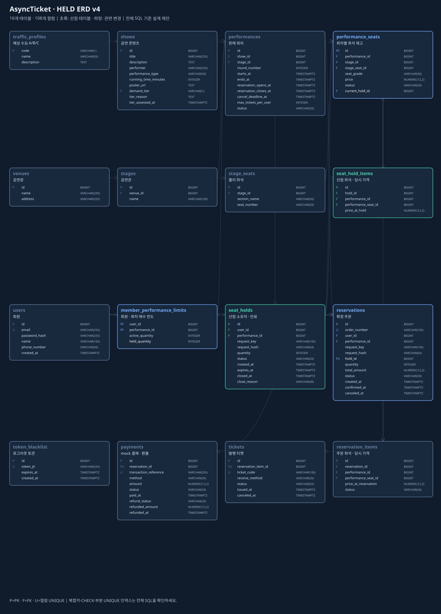
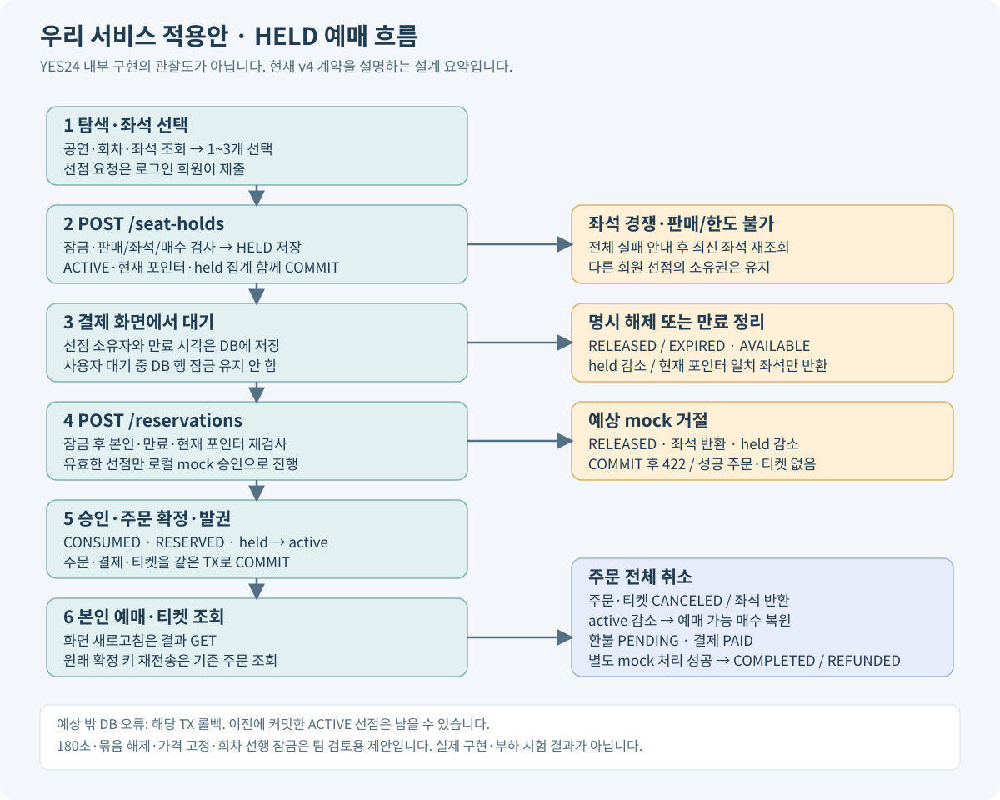

제공자료 기반 · P01
비회원 공연·회차·좌석 조회
팀 최종 합의로 별도 확인된 것은 아님
01-erd-jinja-design.md: 제공된 설계·화면 흐름의 기록
자료에 기록된 내용과 팀 최종 합의는 구분합니다. 묶음 선점·전체 해제·180초·ACTIVE 하나·가격 고정 등은 추가 설계 제안입니다.
팀 최종 합의로 별도 확인된 것은 아님
01-erd-jinja-design.md: 제공된 설계·화면 흐름의 기록본문의 user_id를 소유자로 신뢰하지 않음
01-erd-jinja-design.md: 제공된 설계·화면 흐름의 기록선점 매수 합산의 구체 구현은 P19
01-erd-jinja-design.md: 제공된 설계·화면 흐름의 기록결제 전 선점 전체 해제 P13과 별개
01-erd-jinja-design.md: 제공된 설계·화면 흐름의 기록취소 주문을 영구 누적3매에 포함하지 않음
01-erd-jinja-design.md: 프로젝트 요구사항세부 그룹·TTL은 별도 제안
01-erd-jinja-design.md: 프로젝트 요구사항자동 증설·대기열은 이 필드만으로 실행되지 않음
01-erd-jinja-design.md: 프로젝트 요구사항문서 계약 작성과 구현 파일 생성을 구분
01-erd-jinja-design.md: 프로젝트 요구사항자료는 설계 제안이며 실제 구현이 아님
01-erd-jinja-design.md: 제공된 설계·화면 흐름의 기록최종 URL·JSON API와 인증 전달 방식은 후속 제안
01-erd-jinja-design.md: 제공된 설계·화면 흐름의 기록traffic_profiles는 단순 분류라면 컬럼+CHECK 대체 가능
01-erd-jinja-design.md: 추가 설계 제안하나의 테이블로도 설계 가능하며 분리가 유일한 정답 아님
01-erd-jinja-design.md: 추가 설계 제안부분 해제의 영구 불가를 뜻하지 않음
01-erd-jinja-design.md: 추가 설계 제안숫자180은 사용자나 팀이 명시 확정하지 않음
01-erd-jinja-design.md: 추가 설계 제안만료 정리 후 새 그룹 생성
01-erd-jinja-design.md: 추가 설계 제안끝난 선점 재활성화 금지
01-erd-jinja-design.md: 추가 설계 제안클라이언트 금액은 서버 결정값 대체 불가
01-erd-jinja-design.md: 추가 설계 제안짧은 회차 쓰기 직렬화 병목 가능; COMMIT시각 만료전 보장 아님
01-erd-jinja-design.md: 추가 설계 제안한도3과 취소복원 요구를 구현하는 구체 집계 모델
01-erd-jinja-design.md: 추가 설계 제안성공 결과 재사용과 같은키 다른본문 충돌; 실패응답 영구 재생은 별도 저장소 없이는 보장하지 않음
01-erd-jinja-design.md: 추가 설계 제안취소 주문도 새 결제·티켓 만들지 않음; 별칭키 저장소 없음
01-erd-jinja-design.md: 추가 설계 제안만료시각만으로 행 자동변경 없음; 이력 보존
01-erd-jinja-design.md: 추가 설계 제안mock환불 상태와 실제 PG환불 완료를 혼동하지 않음
01-erd-jinja-design.md: 제공된 설계·화면 흐름의 기록DB잠금 대기는 서비스FIFO대기열이 아님
01-erd-jinja-design.md: 제공된 설계·화면 흐름의 기록회원·회차 한도의 복합 기본키(user_id, performance_id)를 명시하고 실제 DB에서 검증한다. 표시용 관계도만으로 전체 제약 적용을 증명하지 않는다.
held-postgresql.sql: DB 키·제약 설계SQLAlchemy DB session과 공연회차도 구분
01-erd-jinja-design.md: 명칭 대응Jinja2 폴더 예시에는 domain이 생략되므로 다음 구현에서 연결
04-implementation-and-validation.md: 프로젝트 구현 기준API 계약에서 JSON Bearer와 HTML 쿠키·CSRF를 분리하는 후보를 구체화. 팀 승인·구현·보안 시험 완료는 아님.
03-jinja-http-contract.md: 화면 전달 계약과 검토 범위관리자API나 role을 확정사항으로 자동추가하지 않음
03-jinja-http-contract.md: 화면 전달 계약과 검토 범위팀 최종 합의와 구분
02-api-spec.md; 03-jinja-http-contract.md팀 최종 합의와 구분
02-api-spec.md; 03-jinja-http-contract.md팀 최종 합의와 구분
02-api-spec.md팀 최종 합의와 구분
02-api-spec.md팀 최종 합의와 구분
02-api-spec.md팀 최종 합의와 구분
02-api-spec.md; 03-jinja-http-contract.md실제 구현과 검증이 필요함
04-implementation-and-validation.md: 프로젝트 구현 기준실제 구현과 검증이 필요함
04-implementation-and-validation.md: 프로젝트 구현 기준팀 최종 합의와 구분
02-api-spec.md| 전달 | Method | 경로 | 역할 | 인증 | 성공 |
|---|---|---|---|---|---|
| JSON | POST | /auth/signup | 회원 가입 | 비회원 가능 | 201 |
| JSON | POST | /auth/login | OAuth2 형식 로그인 | 비회원 가능 | 200 |
| JSON | POST | /auth/logout | 현재 토큰 로그아웃 | 회원 Bearer | 200 |
| JSON | GET | /users/me | 내 회원 정보 조회 | 회원 Bearer | 200 |
| JSON | PATCH | /users/me | 내 이름·전화번호 수정 | 회원 Bearer | 200 |
| JSON | GET | /shows | 공연 목록·검색 | 비회원 가능 | 200 |
| JSON | GET | /shows/{show_id} | 공연 상세 | 비회원 가능 | 200 |
| JSON | GET | /shows/{show_id}/performances | 공연의 회차 목록 | 비회원 가능 | 200 |
| JSON | GET | /performances/{performance_id} | 회차 상세 | 비회원 가능 | 200 |
| JSON | GET | /performances/{performance_id}/seats | 회차 좌석 상태 조회 | 비회원 가능 | 200 |
| JSON | GET | /performances/{performance_id}/my-limit | 내 회차 매수 한도 조회 | 회원 Bearer | 200 |
| JSON | POST | /seat-holds | 좌석 1~3개 선점 | 회원 Bearer | 201, 200 |
| JSON | GET | /seat-holds/{hold_id} | 내 선점 상세 조회 | 회원 Bearer | 200 |
| JSON | DELETE | /seat-holds/{hold_id} | 내 선점 그룹 전체 해제 | 회원 Bearer | 200 |
| JSON | POST | /reservations | mock 결제·주문 확정 | 회원 Bearer | 201, 200 |
| JSON | GET | /reservations | 내 주문 목록 | 회원 Bearer | 200 |
| JSON | GET | /reservations/{reservation_id} | 내 주문 상세 | 회원 Bearer | 200 |
| JSON | GET | /reservations/{reservation_id}/tickets | 내 주문의 티켓 조회 | 회원 Bearer | 200 |
| JSON | POST | /reservations/{reservation_id}/cancel | 내 주문 전체 취소 | 회원 Bearer | 200 |
| HTML/Form | GET | /pages/shows | list_shows | optional_cookie | 200 |
| HTML/Form | GET | /pages/shows/{show_id} | get_show_with_performances | optional_cookie | 200 |
| HTML/Form | GET | /pages/performances/{performance_id}/seats | list_performance_seats | optional_cookie | 200 |
| HTML/Form | GET | /pages/login | render_login_form | anonymous_or_cookie | 200 |
| HTML/Form | GET | /pages/signup | render_signup_form | anonymous_or_cookie | 200 |
| HTML/Form | GET | /pages/holds/{hold_id} | get_own_hold_without_cleanup | required_cookie | 200 |
| HTML/Form | GET | /pages/reservations | list_own_reservations | required_cookie | 200 |
| HTML/Form | GET | /pages/reservations/{reservation_id} | get_own_reservation_and_tickets | required_cookie | 200 |
| HTML/Form | GET | /pages/profile | get_own_user | required_cookie | 200 |
| HTML/Form | POST | /pages/actions/signup | signup_user | anonymous_or_cookie | 303 |
| HTML/Form | POST | /pages/actions/login | authenticate_and_issue_page_cookies | anonymous_or_cookie | 303 |
| HTML/Form | POST | /pages/actions/logout | blacklist_current_jti_and_clear_page_cookies | required_cookie | 303 |
| HTML/Form | POST | /pages/actions/seat-holds | create_hold | required_cookie | 303 |
| HTML/Form | POST | /pages/actions/holds/{hold_id}/release | release_own_hold | required_cookie | 303 |
| HTML/Form | POST | /pages/actions/reservations | confirm_hold_with_mock_payment | required_cookie | 303 |
| HTML/Form | POST | /pages/actions/reservations/{reservation_id}/cancel | cancel_own_whole_reservation | required_cookie | 303 |
| HTML/Form | POST | /pages/actions/profile | update_own_name_and_phone | required_cookie | 303 |
작성일: 2026-10-28 · 단계 1: ERD 구성 정리 · 검토용 설계 문서
현재 설계는 16개 테이블·108개 컬럼을 기준으로 공연 예매의 HELD 선점과 Jinja2 화면 흐름을 연결한다. 실제 DB 적용과 동시성 시험은 아직 수행하지 않았다.
팀 자료에 기록된 내용과 팀 전체의 최종 합의는 구분한다. API 경로와 세부 정책은 검토 제안이며, 설계도에 나타난 내용이 곧 팀 정책 승인이나 DB 제약 적용을 뜻하지 않는다.
| 표시 | 뜻 | 예 |
|---|---|---|
TEAM_SOURCE |
팀 자료·초안에 기록된 내용. 최종 합의 여부는 별도 | Jinja2의 context→HTML, 화면 선택 후 서버 재검사 |
USER_REQUEST |
요구사항으로 선택한 방향 | HELD 포함, 취소하면 한도 복원, 공연 A/B/C |
DESIGN_PROPOSAL |
자료를 연결하거나 구현 범위를 구체화한 추가 설계 제안 | 두 선점 테이블, 그룹 전체 해제, 180초, 회차 선행 잠금 |
OPEN |
다음 단계에서 팀이 선택하거나 구현 전에 확인해야 하는 부분 | 쿠키 인증/CSRF의 구체 방식, 관리자 기능의 권한·범위 |
COURSE_REQUIREMENT |
발제 문서에서 요구·제외·도전 범위로 구분한 기준 | 기능별 4계층, OAuth2/JWT 블랙리스트, Jinja2 웹 화면 |
정책별 근거와 상태는 정책 등록부에 P01부터 식별자로 기록한다. API의 구체적인 URL·오류 코드·입출력 계약도 자료에 있는 예시와 새 제안을 구분해야 한다. 팀원 자료의 예시 코드를 최종 API 계약으로 그대로 복사하지 않는다.
| 내용 | 출처 구분 | 현재 해석 |
|---|---|---|
| 비회원 조회, 예매는 로그인, 회차 3매, 주문 전체 취소 | TEAM_SOURCE P01–P04 |
초기 플로우에 기록됨. 팀 최종 승인으로 단정하지 않음 |
| 취소한 주문의 매수는 복원 | USER_REQUEST P05 |
취소 주문의 매수는 복원하는 요구사항을 적용 |
| 결제 전 HELD를 포함 | USER_REQUEST P06 |
이전 no-hold 안에서 변경된 요구 |
| 공연 A/B/C 예상 수요 분류 | USER_REQUEST P07 |
좌석 등급과 별개. 자동 서버 증설을 뜻하지 않음 |
| ERD→API 명세→스키마→라우터→main.py | USER_REQUEST P08 |
ERD와 입출력 계약을 먼저 정리하는 진행 순서 |
| 서버 데이터→context→Jinja2→HTML | TEAM_SOURCE P09 |
팀원 Jinja2 자료의 핵심 흐름 |
| 폼 제출 후 303 이동·HTML 조회 | TEAM_SOURCE P10 |
화면용 흐름 예시. JSON API와 전달 형식을 구분 |
| 선점 그룹 1~3석, 전체 확정·전체 해제 | DESIGN_PROPOSAL P13 |
기존 1~3석 주문 흐름을 HELD에 연결한 제안. 팀 확정 사항이 아님 |
| 180초·ACTIVE 1개·연장 제외·선점 가격 고정 | DESIGN_PROPOSAL P14–P17 |
구현을 단순화하는 기본안. 값과 정책은 팀 검토 대상 |
Jinja2는 DB에 저장된 데이터를 받아 HTML로 보여주는 도구다. templates, base.html, context, static은 화면 코드와 전달 방식이며 테이블 이름이 아니다. 이번 Jinja2 연결 때문에 17번째 테이블을 추가하지 않는다.
팀원 자료와 현재 ERD는 용어가 다르다. 이 문서와 다음 API 명세는 현재 ERD의 이름을 기준으로 통일한다.
| 팀원 Jinja2 예시 | 예시에서의 뜻 | 현재 ERD 이름 |
|---|---|---|
Performance |
공연 제목·콘텐츠 | shows |
Session |
개별 공연 회차 | performances |
SessionSeat |
회차별 좌석 | performance_seats |
Reservation의 session_seat_id |
단일 좌석 직접 예약 모형 | 현재는 선점→주문→주문 상세 관계로 확장 |
seat.is_reserved |
예약 완료 여부의 단순 표시 | 실제 재고의 AVAILABLE/HELD/RESERVED/BLOCKED를 구분해 화면용 데이터로 전달 |
SQLAlchemy의 DB session과 공연 회차 Session도 서로 다른 개념이다. 회차는 코드에서 performance, DB 연결 작업 단위는 db_session처럼 구별하는 것이 읽기 쉽다. 이는 명칭 제안 P26이다.
flowchart LR
B[브라우저 화면 요청] --> R[표현 계층 라우터]
R --> A[응용 서비스]
A --> I[저장소·DB 조회]
I --> A
A --> C[화면용 데이터·context]
C --> J[Jinja2 template]
J --> H[HTML 응답]
이 흐름에서 Jinja2가 선점을 생성하거나 잠금을 잡지 않는다. Jinja2가 보여준 좌석 상태는 조회 시점의 값이다. 선점 폼을 제출하면 서버가 인증·소유권·현재 재고·매수를 다시 검사한다.
| 영역 | 테이블 | 저장하는 것과 연결 |
|---|---|---|
| 회원 | users |
로그인 회원. 선점·주문·회원 회차 한도의 소유자 |
| 공연 분류 | traffic_profiles |
A/B/C 코드와 설명. shows.demand_tier가 참조 |
| 공연 콘텐츠 | shows |
제목·출연자·종류·포스터·예상 수요 등급 |
| 시설 | venues |
공연장 주소·이름. 공연관의 부모 |
| 시설 | stages |
공연장 안의 공연관. 물리 좌석과 실제 회차의 부모 |
| 물리 좌석 | stage_seats |
공연관의 구역·좌석 번호. 회차가 바뀌어도 같은 물리 좌석 |
| 판매 회차 | performances |
공연·공연관·시작/종료·판매기간·취소기한·회원 매수 한도 |
| 회차 재고 | performance_seats |
회차별 좌석 등급·가격·상태·현재 선점 포인터 |
| 회원 한도 | member_performance_limits |
회원·회차의 active_quantity, held_quantity 집계와 잠금 기준 |
| 선점 | seat_holds |
회원·회차·수량·요청키·상태·생성/만료/종료 시각 |
| 선점 상세 | seat_hold_items |
선점에 포함된 회차 좌석과 선점 당시 가격 |
| 주문 | reservations |
확정 주문번호·회원·회차·선점 ID·수량·총액·확정/취소 시각 |
| 주문 상세 | reservation_items |
주문의 개별 좌석과 확정 당시 가격·상태 |
| 결제 | payments |
성공 mock 결제·거래 식별자·환불 진행 상태 |
| 발권 | tickets |
주문 상세별 티켓 코드·수령 방식·발행/취소 상태 |
| 인증 | token_blacklist |
로그아웃 토큰 식별자와 만료 시각 |
기존 팀 11개에도 공연/회차, 물리 좌석/회차 재고, 주문/주문 상세가 나뉘어 있었다. 이 분리는 기존 구조의 일부다.
| 단계 | 변화 | 출처와 성격 |
|---|---|---|
| 팀 종합 11개 | 회원·공연·시설·회차·재고·주문·상세·결제·토큰 차단 | 제공된 팀 종합 자료의 구조 |
| 이전 14개 안 | member_performance_limits, tickets, traffic_profiles 추가 |
추가 설계 제안 P11. 현재 구조에 포함 |
| HELD 16개 안 | seat_holds, seat_hold_items 추가 |
HELD 요구를 구체화한 추가 설계 제안 P12. 현재 구조에 포함 |
traffic_profiles는 단순한 A/B/C 구분만 필요하면 shows의 컬럼과 CHECK로도 표현할 수 있다. 현재 구조에 포함하지만 필수 테이블이라고 단정하지 않는다. tickets는 발권 정보를 별도로 관리하는 선택이며 중복 판매를 막는 장치 자체가 아니다. 집계 테이블은 빠른 한도 검사와 잠금 기준을 제공하지만 주문/선점 합계와 동기화해야 한다.
선점 H101은 A가 어느 회차에서 언제까지 좌석을 확보하는지 나타낸다. 그 상세는 A1·A2처럼 어떤 좌석을 얼마에 확보했는지 나타낸다. 그룹에 공통인 소유자·만료·상태를 좌석마다 반복하지 않고, 주문과 연결할 그룹 식별자를 하나로 유지하는 구조다. 하나의 테이블로도 설계할 수 있으며, 이 분리가 팀에서 최종 합의한 유일한 방식은 아니다.
현재 제안은 그룹 1개에 1~3석을 넣어 전부 선점하거나 전부 실패시키고, 그룹 단위로 확정·해제한다. 부분 해제를 지원하려면 상태와 금액·수량·집계 전이를 추가로 설계할 수 있다. 두 테이블로 나눴다는 이유만으로 부분 해제가 원천적으로 불가능한 것은 아니다.
flowchart LR
U[users] --> H[seat_holds: 소유자·회차·만료]
P[performances] --> H
H --> I[seat_hold_items: 1~3석·가격]
I --> S[performance_seats: 회차 재고]
S -->|HELD일 때 현재 포인터| H
H -->|최대 한 성공 주문| R[reservations]
R --> RI[reservation_items]
RI --> T[tickets]
R --> PAY[payments]
과거 만료·해제 상세도 이력으로 남는다. 같은 좌석이 H101과 H202의 상세에 모두 나타나도 현재 주인은 performance_seats.current_hold_id 하나로 판단한다. 그래서 상세의 좌석 ID 전체에 무조건 UNIQUE를 걸면 재선점이 막힌다.
| 대상 | 상태와 전이 | 함께 바뀌는 값 |
|---|---|---|
| 회차 좌석 | AVAILABLE → HELD → RESERVED |
HELD일 때만 current_hold_id 존재 |
| 회차 좌석 반환 | HELD → AVAILABLE, RESERVED → AVAILABLE |
선점 해제/만료 또는 주문 취소 시 포인터 NULL |
| 선점 그룹 | ACTIVE → CONSUMED / RELEASED / EXPIRED |
종료 시각·사유 기록. 종료 그룹 재활성화 금지 |
| 주문·상세 | CONFIRMED → CANCELED |
주문 전체 취소 이력·취소 시각 |
| 티켓 | ISSUED → CANCELED |
발권/취소 시각 |
| 결제 | PAID / REFUNDED, 환불 진행 NONE/PENDING/COMPLETED/FAILED |
실제 PG 결과와 mock 상태를 구분 |
유효한 선점이 끝난 뒤의 내역은 삭제하지 않는다. 결제 성공 후 좌석이 RESERVED이고 포인터가 NULL인 것은 정상이다. 소유권이 선점 단계에서 확정 주문 단계로 넘어간 것이다.
| 처리 | 같은 트랜잭션에서 반영할 데이터 |
|---|---|
| 선점 성공 | ACTIVE 그룹·상세·가격 스냅샷 생성, 좌석 HELD·현재 포인터, held 집계 증가 |
| 확정 성공 | 선점 CONSUMED, 좌석 RESERVED·포인터 NULL, held 감소·active 증가, 주문·상세·성공 mock 결제·티켓 생성 |
| 명시 해제·만료 | ACTIVE 그룹만 한 번 종료, 자기 포인터 좌석만 반환, held 집계 한 번 감소 |
| 예상 mock 거절 | RELEASED·좌석 반환·held 감소를 커밋한 뒤 거절 결과 반환. 성공 주문·티켓 없음 |
| 주문 전체 취소 | 주문·상세·티켓 취소, 좌석 반환, active 감소, 환불 진행 기록. 소비된 옛 선점은 CONSUMED 유지 |
| 예상치 못한 DB 오류 | 해당 트랜잭션 전체 롤백. 이전에 커밋한 ACTIVE 선점은 재시도·해제·만료 정리로 복구 가능 |
만료 시각이 되었다고 행이 자동으로 EXPIRED로 바뀌지는 않는다. 주기 작업 또는 새 요청 시 정리가 필요하다. 만료 정리만 수행한 뒤 새 요청이 한도 초과라면 정리 결과를 유지할지 응용 트랜잭션 규약으로 정한다. 현재 기본안은 정리만 커밋한 뒤 업무 거절을 응답하는 방식이다.
sequenceDiagram
actor A as 회원 A
actor B as 회원 B
participant APP as 응용 서비스
participant DB as PostgreSQL
A->>APP: A1 선점
B->>APP: A1 선점
APP->>DB: A가 먼저 잠금·최신 검사·H101 생성
APP->>DB: A1 HELD·포인터 H101·held 증가·커밋
APP-->>A: 선점 결과
APP->>DB: B가 최신 상태 재검사
APP-->>B: 유효한 타인 선점이므로 거절
Note over A,DB: 결제 화면 대기에는 DB 잠금 없음
alt A가 미만료 상태로 mock 승인
APP->>DB: H101 CONSUMED·A1 RESERVED·주문/발권 커밋
else H101 만료 후 B가 새 요청
APP->>DB: H101 EXPIRED 정리·A의 held 복원
APP->>DB: H202 생성·A1 현재 포인터 H202·커밋
A->>APP: 옛 H101의 늦은 확정
APP-->>A: 승인 전 거절·H202 불변
end
먼저 클릭한 사용자가 반드시 이기는 것은 아니다. 이 그림은 A가 먼저 필요한 잠금을 획득하고 성공 커밋한 가정이다. A가 롤백하면 B가 성공할 수도 있다. B는 자동 대기열에 들어가 다음 차례를 보장받는 것이 아니라 거절 후 새 요청이 필요하다.
잠금·시간 판정의 기본 제안 P18은 회차 → 관련 회원 한도 ID순 → 선점 ID순 → 필요한 주문 → 좌석 ID순이다. 각 요청은 독립 DB 세션을 사용한다. 만료 작업과 취소도 같은 순서를 따른다. 필요한 잠금을 모두 획득한 뒤 clock_timestamp()를 한 번 읽어 t_decision < expires_at인지 확인한다. 잠금 대기 전의 시간이나 트랜잭션 시작 시간만으로 판정하지 않는다. 이 최종 판정은 논리적 승패 시점이며 실제 COMMIT 시각까지 만료 전이라는 약속은 아니다.
회차 행 선행 잠금은 정합성을 설명하기 쉬운 MVP 선택이지만 같은 회차의 서로 다른 좌석 쓰기도 짧게 직렬화한다. 공연을 A로 분류하거나 앱 서버를 늘리는 것만으로 이 DB 병목이 없어지지 않는다. A/B/C를 운영 코드·풀·유입 제어·서버 준비와 연결하고 측정하는 단계는 별도다.
active_quantity + held_quantity + 새 요청 수량 ≤ performances.max_tickets_per_user를 검사한다. 기본 상한은 3이며 만료 정리를 마친 집계를 사용한다. 확정은 held에서 active로 이동, 해제/만료는 held 감소, 취소는 active 감소다. 취소 시 매수 복원은 요구사항 P05이고, 선점도 한도에 포함시키는 구체 모델은 제안 P19다.
가격은 선점 당시 서버가 읽어 seat_hold_items.price_at_hold에 저장한다. 유효한 선점의 확정 주문·결제 총액은 그 합계를 사용한다. 클라이언트가 보낸 금액과 회원 ID로 소유권·가격을 결정하지 않는다. 가격 고정 P17은 팀 검토 대상이다.
선점 생성과 결제 확정은 각각 (인증 회원, request_key)로 기존 결과를 찾고 request_hash로 정규화한 요청 본문을 비교하는 제안 P20을 사용한다. 같은 생성키·본문은 같은 그룹과 같은 만료를 반환하며 시간을 늘리지 않는다. 같은 키의 다른 본문은 충돌이다. 선점당 주문 최대 하나와 별개로 확정 키도 중복을 방지한다. 소비된 선점을 원래 확정 키·해시로 재시도하면 기존 주문의 현재 상태를 반환하고, 다른 키는 기존 주문 참조를 포함한 충돌로 처리하는 P21 기본안이다. 취소된 주문도 재결제·재발권하지 않는다.
현재 ERD와 전체 SQL 제안은 16개 테이블·108개 컬럼으로 구성한다. ERD의 관계 표시만으로 복합 FK, 부분 UNIQUE 인덱스, CHECK가 DB에 적용되지는 않는다. 아래 항목은 전체 SQL의 제안이며 실제 DB 생성·검증이 필요하다.
UNIQUE(reservations.hold_id): 한 선점의 성공 주문 최대 1개.구현 전 보완할 제약: member_performance_limits는 회원·회차 조합당 집계 행 하나가 필요하다. 컬럼과 FK를 표시하는 것에 더해 PRIMARY KEY (user_id, performance_id)를 실제 DB에 명시해야 한다. 복합 기본키는 전체 SQL 제안에 포함하며 보완·검증 항목 P25로 관리한다.
상세 개수=그룹 수량, 상세 가격 합=총액, 집계=유효 주문/선점 합, 소유권의 현재 유효성, 모든 상태 전이의 원자성은 DDL만으로 전부 보장되지 않는다. 응용 서비스·저장소·도메인 규칙을 함께 구현해야 한다.
| 화면 | 현재 ERD에서 읽는 것 | 표시·동작의 책임 |
|---|---|---|
| 공연 목록·상세 | shows, traffic_profiles | 제목·종류·포스터·예상 수요 표시 |
| 회차 선택 | performances, stages, venues | 판매기간·시작 시각·공연관 표시 |
| 좌석 선택 | performance_seats, stage_seats | 좌석 이름·등급·가격·현재 표시 상태. 서버 재검사와 별개 |
| 선점·결제 대기 | 본인 seat_holds와 seat_hold_items | 유효기간·확보 좌석·가격·해제 안내. 타인 ID·토큰·해시 노출 금지 |
| 주문·티켓·마이페이지 | 본인 reservations/items, payments, tickets | 확정/취소·환불 상태·티켓 표시. 소유권 검사는 서버에서 수행 |
개인화된 선점·주문 화면의 GET 조회가 예매 상태를 바꾸도록 만들지 않는다. 만료 여부의 계산 표시와 DB의 만료 정리 작업을 구분한다. 이미 만료됐지만 ACTIVE가 남을 수 있으므로 status 하나만 믿고 결제 가능 버튼을 활성화하면 안 된다. 버튼 상태도 서버 검증을 대신하지 않는다.
| 계층 | 맡는 일 | Jinja2 자료와 연결 |
|---|---|---|
| 표현 presentation | 라우터·인증 연결·입력/출력·오류·HTML context | routers, schemas, templates, static |
| 응용 application | 조회/선점/확정/해제/취소의 조율·트랜잭션 | services. JSON과 HTML 어댑터가 같은 업무 서비스를 호출 |
| 도메인 domain | 순수 Python의 소유권·만료·상태·매수·가격 규칙 | 팀원 폴더 예시에는 명시적으로 생략됨. 발제의 4계층과 연결해 추가할 책임 |
| 인프라 infrastructure | SQLAlchemy 모델·AsyncSession·저장소·DB 잠금·ORM 변환 | models, repositories |
Jinja2 폴더 예시의 함수는 학습용 개략 코드다. 동기 함수와 메모리 리스트 예시가 실제 AsyncSession 구현이라는 뜻은 아니다. 또한 BaseModel 예시만으로 Form 파싱이 완성된 것도 아니다. API 명세에서 HTML Form과 JSON의 전달 방식을 정한 뒤, 다음 단계의 Pydantic 스키마와 라우터에서 연결한다.
로그인 HTML을 위한 쿠키/JWT 전달, CSRF 방어, 리다이렉트 대상 검사, API의 Bearer 인증과의 결합은 ERD 단계에서 열어 둔 항목이다. 후속 화면 명세에서는 P28의 검토 후보를 구체화하며 팀 확정과 구분한다. 기존 users에 관리자 role 컬럼이 없으므로 관리자 CRUD의 인증·권한 범위도 별도 정책 결정이 필요하다. 이 문서가 새로운 관리자 권한을 자동으로 확정하지 않는다.
이번 단계에서 현재 ERD의 테이블·컬럼·명칭·상태와 Jinja2의 표현 역할, 정책별 출처를 정리했다. 다음 단계는 API 명세이며 요청·응답 필드, 인증, 성공·실패·재시도·리다이렉트를 정의한다. 이때도 미확정 정책은 DESIGN_PROPOSAL 또는 OPEN으로 유지한다.
이후 단계는 요청·응답 스키마 → 라우터 → main.py 등록이다. API 계약에 데이터 형식을 적는 것과 실제 Pydantic/Python 파일을 작성하는 것은 다르다. 이번 ERD 문서에서는 구현 코드를 생성하지 않는다.
작성일: 2026-10-28 · 강사 순서의 2단계 API 명세. 1단계 ERD·Jinja2 설계를 먼저 정리한 뒤 작성했다. 실제 Pydantic 스키마·라우터·main.py·DB 구현은 작성하지 않았다.
현재 기준은 16개 테이블·108개 컬럼의 HELD ERD다. 이 문서는 API 계약을 정의하며 실제 서버 구현·DB 적용·HTTP 테스트 완료를 뜻하지 않는다.
TEAM_SOURCE: 팀 자료에 존재하는 비회원 조회·로그인 예매·3매·주문 전체 취소·Jinja2 context/폼→303 예시. 자료에 있다는 것과 팀 최종 합의는 다르다.USER_REQUEST: 요구사항인 HELD 포함, 주문 취소 후 가능 매수 복원, 공연 A/B/C, 강사 진행 순서.DESIGN_PROPOSAL: 이 문서의 구체 URL·입출력 필드·HTTP 오류·재시도·그룹 정책·180초·ACTIVE1개·가격 고정·잠금·토큰 수명 등. 기존 ERD 메모의 URL도 [API 제안]으로 읽는다.OPEN: 관리자 역할/권한과 CRUD 범위(P29), 쿠키/CSRF 전달 후보(P28)의 팀 선택. 정책 등록부에서 팀 자료·요구사항·추가 제안·발제 요구를 함께 읽는다.이 명세는 사용자 예매 핵심 MVP의 JSON API 19개 작업이다. 관리자 공연·시설·좌석 준비 CRUD, 권한 role 추가, 외부 PG, 대기열, 자동 서버 증설, 이메일/SMS, 비밀번호 변경/재설정, 입장 스캔은 포함하지 않는다. 발제의 모든 필수 기능이 완료됐다는 뜻은 아니며, 관리자/운영 준비 방식은 구현 전 별도 결정해야 한다.
Jinja2 HTML/Form 경로는 화면·폼 전달 명세에 별도로 연결한다. 이 JSON API에 HTML 본문이나 인증 쿠키를 임의 혼용하지 않는다. 두 표현 계층은 같은 응용 서비스를 직접 호출한다.
| 항목 | 계약 기본안 |
|---|---|
| 기본 주소 | 개발 예시 http://localhost:8000, 경로에 /api 접두어 없음. 실제 실행 확인 아님 |
| 인증 | 보호 API는 Authorization: Bearer <JWT>만 사용. 쿠키를 대체 인증으로 받지 않음. 서명·sub·exp·jti·블랙리스트를 매번 검사 |
| 입력 | 기본 JSON. 로그인만 OAuth2의 URL 인코딩 Form. 알 수 없는 Body 필드 거절. 회원 ID·가격·상태·총액을 입력받아 신뢰하지 않음 |
| 식별자 | 1~9223372036854775807 범위의 int64. 화면 예시의 H101 같은 표기는 설명용이고 실제 JSON ID는 숫자 |
| 금액 | "100000.00" 형태의 십진 문자열. 부동소수점 오차 방지 |
| 시각 | UTC Z 표기 ISO8601. Jinja2 화면은 Asia/Seoul 표시 가능 |
| 페이징 | page 기본1, size 기본20·최대100, items/page/size/total. 정렬은 각 API에 명시 |
| 최신성 | 기본 응답 Cache-Control: no-store. 조회는 스냅샷이며 확보 성공 보장 아님 |
| 재시도 | 503 DB_BUSY일 때 Retry-After 기본1초 제안. 같은 성공 요청키 재사용. 대기열·선점 순서 보장 없음 |
| 요청 제한 | 현재 숫자로 정한 rate limit/429 동작은 구현·측정하지 않음. A/B/C가 자동 제한을 수행하지 않음 |
| 실패 | JSON error envelope와 공개 코드 사용. SQL·stack trace·비밀번호·해시·타인 소유자 정보 노출 금지 |
GET은 상태를 변경하거나 만료 정리를 커밋하지 않는다. GET 선점은 ACTIVE와 is_expired=true가 동시에 보일 수 있다. 변경 요청과 내부 worker가 같은 만료 절차를 사용한다. server_time, can_confirm, remaining_quantity, cleanup_pending, 좌석 이름은 화면/응답용 계산·조합 값이며 ERD 컬럼 추가를 의미하지 않는다.
| Method | 경로 | 인증 | 성공 | 기능 |
|---|---|---|---|---|
| POST | /auth/signup |
비회원 가능 | 201 | 회원 가입 |
| POST | /auth/login |
비회원 가능 | 200 | OAuth2 형식 로그인 |
| POST | /auth/logout |
회원 | 200 | 현재 토큰 로그아웃 |
| GET | /users/me |
회원 | 200 | 내 회원 정보 조회 |
| PATCH | /users/me |
회원 | 200 | 내 이름·전화번호 수정 |
| GET | /shows |
비회원 가능 | 200 | 공연 목록·검색 |
| GET | /shows/{show_id} |
비회원 가능 | 200 | 공연 상세 |
| GET | /shows/{show_id}/performances |
비회원 가능 | 200 | 공연의 회차 목록 |
| GET | /performances/{performance_id} |
비회원 가능 | 200 | 회차 상세 |
| GET | /performances/{performance_id}/seats |
비회원 가능 | 200 | 회차 좌석 상태 조회 |
| GET | /performances/{performance_id}/my-limit |
회원 | 200 | 내 회차 매수 한도 조회 |
| POST | /seat-holds |
회원 | 201, 200 | 좌석 1~3개 선점 |
| GET | /seat-holds/{hold_id} |
회원 | 200 | 내 선점 상세 조회 |
| DELETE | /seat-holds/{hold_id} |
회원 | 200 | 내 선점 그룹 전체 해제 |
| POST | /reservations |
회원 | 201, 200 | mock 결제·주문 확정 |
| GET | /reservations |
회원 | 200 | 내 주문 목록 |
| GET | /reservations/{reservation_id} |
회원 | 200 | 내 주문 상세 |
| GET | /reservations/{reservation_id}/tickets |
회원 | 200 | 내 주문의 티켓 조회 |
| POST | /reservations/{reservation_id}/cancel |
회원 | 200 | 내 주문 전체 취소 |
모든 예시 값·토큰·티켓은 설명용이다. 이 문서의 예시와 openapi.json은 같은 입출력 계약을 사용한다. 실제 거래·로그인 결과가 아니다.
DESIGN_PROPOSAL; 연결 정책: P02.users.이메일은 앞뒤 공백 제거 후 소문자로 정규화한다는 제안이다. 이름은 공백만 입력할 수 없다. 전화번호는 선택값이다.
password는 해시로 저장하고 응답·로그에 원문이나 해시를 내보내지 않는다. 비밀번호 길이 8~128은 새 제안이며 팀 자료의 확정 기준이 아니다. 가입 후 자동 로그인하지 않는다.
8~128은 문자 수 계약이다. 직접 bcrypt의 UTF-8 바이트 제한과 충돌하지 않도록 bcrypt_sha256 같은 길이 대응 해시 전략을 구현 제안으로 검토해야 한다. 해시 전략은 구현 전 결정하며, 원문을 임의로 잘라 저장하는 방식은 금지한다.
요청 Body: application/json, 계약 SignupInput.
{
"email": "member-a@example.test",
"password": "ExampleOnly123!",
"name": "회원 A",
"phone_number": null
}
성공 예시 201:
{
"id": 1,
"email": "member-a@example.test",
"name": "회원 A",
"phone_number": null,
"created_at": "2026-10-28T05:00:00Z"
}
거절/오류: 409 EMAIL_ALREADY_EXISTS, 422 VALIDATION_ERROR, 503 DB_BUSY, 500 INTERNAL_ERROR.
DESIGN_PROPOSAL; 연결 정책: P02, P36, P38.users.username 필드에 이메일을 보내는 application/x-www-form-urlencoded 요청이다. 그 외 JSON API는 JSON 본문을 사용한다.
JWT에는 검증 가능한 sub·exp·jti를 포함한다. 예시 expires_in=1800은 제안값이다. 이 경로는 인증 쿠키를 설정하지 않으며 응답 토큰을 Bearer로 전달한다.
요청 Body: application/x-www-form-urlencoded, 계약 LoginForm.
{
"username": "member-a@example.test",
"password": "ExampleOnly123!",
"grant_type": "password",
"scope": ""
}
성공 예시 200:
{
"access_token": "EXAMPLE_JWT_NOT_A_VALID_TOKEN",
"token_type": "bearer",
"expires_in": 1800
}
거절/오류: 401 INVALID_CREDENTIALS, 422 VALIDATION_ERROR, 503 DB_BUSY, 500 INTERNAL_ERROR.
DESIGN_PROPOSAL; 연결 정책: P02.token_blacklist.현재 JWT의 jti와 exp를 블랙리스트에 저장한다. 다른 모든 기기 로그아웃 기능은 아니다.
블랙리스트에 오른 같은 토큰의 재요청은 인증 단계에서 401이다. 이미 블랙리스트인 토큰에도 무조건 200을 약속하지 않는다.
요청 Body 없음. 임의 회원 ID·가격·상태를 추가하지 않는다.
성공 예시 200:
{
"logged_out": true
}
거절/오류: 401 AUTHENTICATION_REQUIRED, 503 DB_BUSY, 500 INTERNAL_ERROR.
DESIGN_PROPOSAL; 연결 정책: P02.users.인증한 회원의 공개 응답 필드만 반환한다. password_hash, 토큰, 내부 요청 해시는 반환하지 않는다.
요청 Body 없음. 임의 회원 ID·가격·상태를 추가하지 않는다.
성공 예시 200:
{
"id": 1,
"email": "member-a@example.test",
"name": "회원 A",
"phone_number": null,
"created_at": "2026-10-28T05:00:00Z"
}
거절/오류: 401 AUTHENTICATION_REQUIRED, 503 DB_BUSY, 500 INTERNAL_ERROR.
DESIGN_PROPOSAL; 연결 정책: P02.users.users.전달한 필드만 변경한다. phone_number=null은 삭제, 필드 생략은 유지이다. 이름은 공백만 입력할 수 없다.
이메일·비밀번호·권한 수정은 이 명세 범위 밖이다. 최소 한 필드를 보내야 한다.
요청 Body: application/json, 계약 ProfilePatch.
{
"name": "변경한 이름",
"phone_number": null
}
성공 예시 200:
{
"id": 1,
"email": "member-a@example.test",
"name": "변경한 이름",
"phone_number": null,
"created_at": "2026-10-28T05:00:00Z"
}
거절/오류: 401 AUTHENTICATION_REQUIRED, 422 VALIDATION_ERROR, 503 DB_BUSY, 500 INTERNAL_ERROR.
DESIGN_PROPOSAL; 연결 정책: P01, P07.shows, traffic_profiles.비회원 조회 가능. id 오름차순으로 정렬한다. page는 1부터 시작하며 size 기본20·최대100이다.
A/B/C는 예상 수요 분류이며 자동 증설·대기열 또는 VIP/R/S 좌석 등급이 아니다.
| 위치 | 이름 | 필수 | 형식·제한 |
|---|---|---|---|
| query | page |
아니오 | {"type": "integer", "minimum": 1, "default": 1} |
| query | size |
아니오 | {"type": "integer", "minimum": 1, "maximum": 100, "default": 20} |
| query | q |
아니오 | {"type": "string", "maxLength": 100} |
| query | type |
아니오 | {"type": "string", "maxLength": 50} |
| query | demand_tier |
아니오 | {"type": "string", "enum": ["A", "B", "C"]} |
요청 Body 없음. 임의 회원 ID·가격·상태를 추가하지 않는다.
성공 예시 200:
{
"items": [
{
"id": 10,
"title": "봄 콘서트",
"description": "설명용 공연",
"performer": "예시 아티스트",
"performance_type": "CONCERT",
"running_time_minutes": 120,
"poster_url": null,
"demand_tier": "A",
"tier_reason": "오픈 집중 수요 실험군",
"tier_assessed_at": "2026-10-28T04:00:00Z"
}
],
"page": 1,
"size": 20,
"total": 1
}
거절/오류: 422 VALIDATION_ERROR, 503 DB_BUSY, 500 INTERNAL_ERROR.
DESIGN_PROPOSAL; 연결 정책: P01, P07.shows, traffic_profiles.공연 콘텐츠를 반환한다. 공연 회차는 별도 목록으로 조회한다.
| 위치 | 이름 | 필수 | 형식·제한 |
|---|---|---|---|
| path | show_id |
예 | {"type": "integer", "format": "int64", "minimum": 1, "maximum": 9223372036854775807} |
요청 Body 없음. 임의 회원 ID·가격·상태를 추가하지 않는다.
성공 예시 200:
{
"id": 10,
"title": "봄 콘서트",
"description": "설명용 공연",
"performer": "예시 아티스트",
"performance_type": "CONCERT",
"running_time_minutes": 120,
"poster_url": null,
"demand_tier": "A",
"tier_reason": "오픈 집중 수요 실험군",
"tier_assessed_at": "2026-10-28T04:00:00Z"
}
거절/오류: 404 RESOURCE_NOT_FOUND, 422 VALIDATION_ERROR, 503 DB_BUSY, 500 INTERNAL_ERROR.
DESIGN_PROPOSAL; 연결 정책: P01, P26.shows, performances.shows는 콘텐츠, performances는 판매 회차이다. starts_at 오름차순·id 오름차순으로 정렬한다. 공연은 있으나 회차가 없으면 items=[]로 200이다.
| 위치 | 이름 | 필수 | 형식·제한 |
|---|---|---|---|
| path | show_id |
예 | {"type": "integer", "format": "int64", "minimum": 1, "maximum": 9223372036854775807} |
| query | page |
아니오 | {"type": "integer", "minimum": 1, "default": 1} |
| query | size |
아니오 | {"type": "integer", "minimum": 1, "maximum": 100, "default": 20} |
요청 Body 없음. 임의 회원 ID·가격·상태를 추가하지 않는다.
성공 예시 200:
{
"items": [
{
"id": 7,
"show_id": 10,
"stage_id": 3,
"round_number": 1,
"starts_at": "2026-11-01T10:00:00Z",
"ends_at": "2026-11-01T12:00:00Z",
"reservation_opens_at": "2026-10-28T00:00:00Z",
"reservation_closes_at": "2026-11-01T09:00:00Z",
"cancel_deadline_at": "2026-10-31T09:00:00Z",
"max_tickets_per_user": 3,
"status": "OPEN"
}
],
"page": 1,
"size": 20,
"total": 1
}
거절/오류: 404 RESOURCE_NOT_FOUND, 422 VALIDATION_ERROR, 503 DB_BUSY, 500 INTERNAL_ERROR.
DESIGN_PROPOSAL; 연결 정책: P01.performances.판매 기간·취소 기한·회차 한도를 반환한다. OPEN 상태만으로 판매 가능하다고 확정하지 않고 변경 요청 때 서버 시각과 함께 검사한다.
| 위치 | 이름 | 필수 | 형식·제한 |
|---|---|---|---|
| path | performance_id |
예 | {"type": "integer", "format": "int64", "minimum": 1, "maximum": 9223372036854775807} |
요청 Body 없음. 임의 회원 ID·가격·상태를 추가하지 않는다.
성공 예시 200:
{
"id": 7,
"show_id": 10,
"stage_id": 3,
"round_number": 1,
"starts_at": "2026-11-01T10:00:00Z",
"ends_at": "2026-11-01T12:00:00Z",
"reservation_opens_at": "2026-10-28T00:00:00Z",
"reservation_closes_at": "2026-11-01T09:00:00Z",
"cancel_deadline_at": "2026-10-31T09:00:00Z",
"max_tickets_per_user": 3,
"status": "OPEN"
}
거절/오류: 404 RESOURCE_NOT_FOUND, 422 VALIDATION_ERROR, 503 DB_BUSY, 500 INTERNAL_ERROR.
DESIGN_PROPOSAL; 연결 정책: P01, P09, P22.performance_seats, stage_seats.좌석 id 오름차순으로 반환한다. 현재 MVP는 좌석도 전체를 한 응답으로 조회하며 대형 공연장 전송량은 별도 최적화 대상이다.
공개 응답에는 타인의 user_id·hold_id·current_hold_id·선점 상세·티켓 코드를 넣지 않는다. status는 저장 상태의 조회 스냅샷이다.
GET은 만료 정리를 수행하지 않는다. 정리 전에는 만료된 그룹의 HELD 표시가 잠시 남을 수 있다. 최종 확보 가능 여부는 POST에서 재검사한다.
| 위치 | 이름 | 필수 | 형식·제한 |
|---|---|---|---|
| path | performance_id |
예 | {"type": "integer", "format": "int64", "minimum": 1, "maximum": 9223372036854775807} |
요청 Body 없음. 임의 회원 ID·가격·상태를 추가하지 않는다.
성공 예시 200:
{
"performance_id": 7,
"as_of": "2026-10-28T05:00:00Z",
"items": [
{
"id": 501,
"stage_seat_id": 31,
"section_name": "1층",
"seat_number": "A1",
"seat_grade": "R",
"price": "100000.00",
"status": "AVAILABLE"
}
]
}
거절/오류: 404 RESOURCE_NOT_FOUND, 422 VALIDATION_ERROR, 503 DB_BUSY, 500 INTERNAL_ERROR.
DESIGN_PROPOSAL; 연결 정책: P03, P19.member_performance_limits, seat_holds, performances.자신의 집계만 반환한다. 한도행이 아직 없으면 0으로 표시하고 GET에서 행을 생성하지 않는다.
held_quantity는 저장된 ACTIVE 그룹 집계이다. 만료됐으나 정리 전인 그룹이 있으면 cleanup_pending=true이고 remaining_quantity는 보수적으로 계산한다.
remaining_quantity=max(0,max_tickets_per_user-active_quantity-held_quantity). 실제 변경 요청은 관련 만료를 정리한 뒤 다시 검사한다. active_hold_id는 본인 그룹에만 제공한다.
| 위치 | 이름 | 필수 | 형식·제한 |
|---|---|---|---|
| path | performance_id |
예 | {"type": "integer", "format": "int64", "minimum": 1, "maximum": 9223372036854775807} |
요청 Body 없음. 임의 회원 ID·가격·상태를 추가하지 않는다.
성공 예시 200:
{
"performance_id": 7,
"max_tickets_per_user": 3,
"active_quantity": 0,
"held_quantity": 0,
"remaining_quantity": 3,
"cleanup_pending": false,
"active_hold_id": null,
"as_of": "2026-10-28T05:00:00Z"
}
거절/오류: 401 AUTHENTICATION_REQUIRED, 404 RESOURCE_NOT_FOUND, 422 VALIDATION_ERROR, 503 DB_BUSY, 500 INTERNAL_ERROR.
DESIGN_PROPOSAL; 연결 정책: P02, P03, P06, P12, P13, P14, P15, P16, P17, P18, P19, P20.performances, performance_seats, seat_holds, member_performance_limits.seat_holds, seat_hold_items, performance_seats, member_performance_limits.seat_ids는 performance_seats.id이며 물리 좌석 ID가 아니다. 중복 ID, 다른 회차 좌석, 0·음수는 422이다. 회원·가격·총액·상태는 서버가 결정한다.
공통 잠금 후 관련 만료 그룹을 전체 정리하고 OPEN 및 판매기간, 전 좌석 AVAILABLE/회수 가능, active+held+요청<=회차한도, 다른 유효 ACTIVE 그룹 부재를 검사한다.
그룹 ACTIVE·상세 가격·좌석 HELD/current_hold_id·held 증가를 함께 커밋한다. 일부 좌석 충돌이면 요청 전체 실패다. cleanup 뒤 예상 업무 거절이면 cleanup만 커밋한다.
expires_at=min(잠금 후 DB현재시각+180초,판매마감,공연시작). 180초·그룹1개·전체해제·연장제외·선점가격고정·회차행잠금은 모두 제안이다.
같은 회원·생성키·정규화 본문이면 200으로 같은 그룹의 현재 상태·같은 만료 시각을 반환한다. 종료 그룹도 재생성/연장하지 않는다. 신규만 201이다.
요청 Body: application/json, 계약 HoldCreate.
{
"performance_id": 7,
"seat_ids": [
501
],
"request_key": "hold-a-001"
}
성공 예시 201:
{
"id": 101,
"performance_id": 7,
"request_key": "hold-a-001",
"quantity": 1,
"status": "ACTIVE",
"created_at": "2026-10-28T05:00:00Z",
"expires_at": "2026-10-28T05:03:00Z",
"closed_at": null,
"close_reason": null,
"server_time": "2026-10-28T05:00:00Z",
"is_expired": false,
"can_confirm": true,
"total_amount": "100000.00",
"items": [
{
"performance_seat_id": 501,
"seat_number": "A1",
"price_at_hold": "100000.00"
}
]
}
거절/오류: 401 AUTHENTICATION_REQUIRED, 404 RESOURCE_NOT_FOUND, 409 SALE_UNAVAILABLE, 409 SEAT_UNAVAILABLE, 409 TICKET_LIMIT_EXCEEDED, 409 ACTIVE_HOLD_EXISTS, 409 IDEMPOTENCY_KEY_REUSED, 422 VALIDATION_ERROR, 503 DB_BUSY, 500 INTERNAL_ERROR.
DESIGN_PROPOSAL; 연결 정책: P02, P09, P22.seat_holds, seat_hold_items, performance_seats, performances.본인 선점만 조회하며 DB 상태를 변경하지 않는다. server_time·expires_at으로 is_expired를 계산하고, ACTIVE·미만료·판매가능·현재 포인터 일치 때만 can_confirm=true이다.
정리 전에는 status=ACTIVE와 is_expired=true가 함께 나올 수 있다. can_confirm은 조회 시점 안내이며 결제 확정 보장이 아니다.
| 위치 | 이름 | 필수 | 형식·제한 |
|---|---|---|---|
| path | hold_id |
예 | {"type": "integer", "format": "int64", "minimum": 1, "maximum": 9223372036854775807} |
요청 Body 없음. 임의 회원 ID·가격·상태를 추가하지 않는다.
성공 예시 200:
{
"id": 101,
"performance_id": 7,
"request_key": "hold-a-001",
"quantity": 1,
"status": "ACTIVE",
"created_at": "2026-10-28T05:00:00Z",
"expires_at": "2026-10-28T05:03:00Z",
"closed_at": null,
"close_reason": null,
"server_time": "2026-10-28T05:00:00Z",
"is_expired": false,
"can_confirm": true,
"total_amount": "100000.00",
"items": [
{
"performance_seat_id": 501,
"seat_number": "A1",
"price_at_hold": "100000.00"
}
]
}
거절/오류: 401 AUTHENTICATION_REQUIRED, 404 RESOURCE_NOT_FOUND, 403 FORBIDDEN, 422 VALIDATION_ERROR, 503 DB_BUSY, 500 INTERNAL_ERROR.
DESIGN_PROPOSAL; 연결 정책: P02, P13, P18, P19.seat_holds, seat_hold_items, performance_seats.seat_holds, performance_seats, member_performance_limits.행을 물리 삭제하지 않고 그룹 전체를 RELEASED로 종료한다. 이미 만료됐다면 EXPIRED로 정리해 반환한다. 자기 current_hold_id 좌석만 AVAILABLE/NULL로 돌리고 held를 한 번 감소시킨다.
RELEASED 또는 EXPIRED에 반복 요청하면 현재 결과 200이며 이중 차감하지 않는다. CONSUMED면 409와 본인 기존 주문 참조를 반환한다. 타인 그룹은 변경하지 않는다.
| 위치 | 이름 | 필수 | 형식·제한 |
|---|---|---|---|
| path | hold_id |
예 | {"type": "integer", "format": "int64", "minimum": 1, "maximum": 9223372036854775807} |
요청 Body 없음. 임의 회원 ID·가격·상태를 추가하지 않는다.
성공 예시 200:
{
"id": 101,
"performance_id": 7,
"request_key": "hold-a-001",
"quantity": 1,
"status": "RELEASED",
"created_at": "2026-10-28T05:00:00Z",
"expires_at": "2026-10-28T05:03:00Z",
"closed_at": "2026-10-28T05:01:00Z",
"close_reason": "USER_RELEASE",
"server_time": "2026-10-28T05:01:00Z",
"is_expired": false,
"can_confirm": false,
"total_amount": "100000.00",
"items": [
{
"performance_seat_id": 501,
"seat_number": "A1",
"price_at_hold": "100000.00"
}
]
}
거절/오류: 401 AUTHENTICATION_REQUIRED, 404 RESOURCE_NOT_FOUND, 403 FORBIDDEN, 409 HOLD_ALREADY_CONSUMED, 422 VALIDATION_ERROR, 503 DB_BUSY, 500 INTERNAL_ERROR.
DESIGN_PROPOSAL; 연결 정책: P02, P06, P13, P17, P18, P19, P20, P21, P23.seat_holds, seat_hold_items, performance_seats, performances, reservations.seat_holds, performance_seats, member_performance_limits, reservations, reservation_items, payments, tickets.확정키/해시와 기존 주문을 먼저 검사한다. 같은 원래 키·본문은 기존 주문 현재 상태를 200으로 반환한다. 취소된 주문도 재결제·재발권하지 않는다.
신규 확정은 본인 소유·ACTIVE·잠금 후 decision_at<expires_at·모든 좌석 포인터 일치·판매기간·한도를 검사한 뒤 mock을 즉시 처리한다. 외부 PG 호출과 사용자 대기를 TX 안에 넣지 않는다.
APPROVE면 CONSUMED·RESERVED/NULL·held→active·주문·상세·PAID 결제·ISSUED 티켓을 함께 커밋하고 201이다. 총액은 선점 상세 합계이다.
DECLINE은 테스트용 예상 거절이다. RELEASED·좌석 반환·held 감소를 커밋하고 422 MOCK_PAYMENT_DECLINED, 성공 주문/결제/티켓 0개이다.
DB 예외는 전체 롤백이므로 이전에 커밋한 ACTIVE 선점이 남을 수 있다. 만료 거절은 EXPIRED 정리를 커밋하고 409이다. 실패 응답 전체를 저장하지 않으므로 거절 재시도의 코드가 달라질 수 있다.
요청 Body: application/json, 계약 ReservationCreate.
{
"hold_id": 101,
"request_key": "confirm-a-001",
"mock_payment": {
"result": "APPROVE"
}
}
성공 예시 201:
{
"id": 201,
"order_number": "AT-EXAMPLE-000201",
"performance_id": 7,
"hold_id": 101,
"quantity": 1,
"total_amount": "100000.00",
"status": "CONFIRMED",
"created_at": "2026-10-28T05:01:00Z",
"confirmed_at": "2026-10-28T05:01:00Z",
"canceled_at": null,
"items": [
{
"id": 401,
"performance_seat_id": 501,
"seat_number": "A1",
"price_at_reservation": "100000.00",
"status": "CONFIRMED"
}
],
"payment": {
"id": 301,
"method": "MOCK",
"amount": "100000.00",
"status": "PAID",
"paid_at": "2026-10-28T05:01:00Z",
"refund_status": "NONE",
"refunded_amount": "0.00",
"refunded_at": null
}
}
거절/오류: 401 AUTHENTICATION_REQUIRED, 404 RESOURCE_NOT_FOUND, 403 FORBIDDEN, 409 SALE_UNAVAILABLE, 409 HOLD_EXPIRED, 409 HOLD_NOT_ACTIVE, 409 HOLD_ALREADY_CONSUMED, 409 IDEMPOTENCY_KEY_REUSED, 409 TICKET_LIMIT_EXCEEDED, 422 MOCK_PAYMENT_DECLINED, 422 VALIDATION_ERROR, 503 DB_BUSY, 500 INTERNAL_ERROR.
DESIGN_PROPOSAL; 연결 정책: P02.reservations, reservation_items, payments, stage_seats.인증한 회원 소유 주문만 반환한다. user_id 쿼리로 다른 회원을 지정할 수 없다. created_at 내림차순·id 내림차순으로 정렬한다.
| 위치 | 이름 | 필수 | 형식·제한 |
|---|---|---|---|
| query | page |
아니오 | {"type": "integer", "minimum": 1, "default": 1} |
| query | size |
아니오 | {"type": "integer", "minimum": 1, "maximum": 100, "default": 20} |
| query | status |
아니오 | {"type": "string", "enum": ["CONFIRMED", "CANCELED"]} |
요청 Body 없음. 임의 회원 ID·가격·상태를 추가하지 않는다.
성공 예시 200:
{
"items": [
{
"id": 201,
"order_number": "AT-EXAMPLE-000201",
"performance_id": 7,
"hold_id": 101,
"quantity": 1,
"total_amount": "100000.00",
"status": "CONFIRMED",
"created_at": "2026-10-28T05:01:00Z",
"confirmed_at": "2026-10-28T05:01:00Z",
"canceled_at": null,
"items": [
{
"id": 401,
"performance_seat_id": 501,
"seat_number": "A1",
"price_at_reservation": "100000.00",
"status": "CONFIRMED"
}
],
"payment": {
"id": 301,
"method": "MOCK",
"amount": "100000.00",
"status": "PAID",
"paid_at": "2026-10-28T05:01:00Z",
"refund_status": "NONE",
"refunded_amount": "0.00",
"refunded_at": null
}
}
],
"page": 1,
"size": 20,
"total": 1
}
거절/오류: 401 AUTHENTICATION_REQUIRED, 422 VALIDATION_ERROR, 503 DB_BUSY, 500 INTERNAL_ERROR.
DESIGN_PROPOSAL; 연결 정책: P02.reservations, reservation_items, payments, stage_seats.본인 주문의 좌석·가격·결제/환불 현재 상태를 반환한다. 취소 이력도 조회할 수 있다. 티켓 코드는 별도 본인 티켓 조회를 사용한다.
| 위치 | 이름 | 필수 | 형식·제한 |
|---|---|---|---|
| path | reservation_id |
예 | {"type": "integer", "format": "int64", "minimum": 1, "maximum": 9223372036854775807} |
요청 Body 없음. 임의 회원 ID·가격·상태를 추가하지 않는다.
성공 예시 200:
{
"id": 201,
"order_number": "AT-EXAMPLE-000201",
"performance_id": 7,
"hold_id": 101,
"quantity": 1,
"total_amount": "100000.00",
"status": "CONFIRMED",
"created_at": "2026-10-28T05:01:00Z",
"confirmed_at": "2026-10-28T05:01:00Z",
"canceled_at": null,
"items": [
{
"id": 401,
"performance_seat_id": 501,
"seat_number": "A1",
"price_at_reservation": "100000.00",
"status": "CONFIRMED"
}
],
"payment": {
"id": 301,
"method": "MOCK",
"amount": "100000.00",
"status": "PAID",
"paid_at": "2026-10-28T05:01:00Z",
"refund_status": "NONE",
"refunded_amount": "0.00",
"refunded_at": null
}
}
거절/오류: 401 AUTHENTICATION_REQUIRED, 404 RESOURCE_NOT_FOUND, 403 FORBIDDEN, 422 VALIDATION_ERROR, 503 DB_BUSY, 500 INTERNAL_ERROR.
DESIGN_PROPOSAL; 연결 정책: P02, P11.reservations, reservation_items, tickets.본인 주문의 티켓만 반환한다. 취소 주문에는 CANCELED 티켓을 반환한다. 티켓 발행은 좌석 선점이나 입장 검증 구현 완료를 뜻하지 않는다.
| 위치 | 이름 | 필수 | 형식·제한 |
|---|---|---|---|
| path | reservation_id |
예 | {"type": "integer", "format": "int64", "minimum": 1, "maximum": 9223372036854775807} |
요청 Body 없음. 임의 회원 ID·가격·상태를 추가하지 않는다.
성공 예시 200:
{
"reservation_id": 201,
"items": [
{
"id": 601,
"reservation_item_id": 401,
"ticket_code": "EXAMPLE-TICKET-000601",
"receive_method": "ON_SITE",
"status": "ISSUED",
"issued_at": "2026-10-28T05:01:00Z",
"canceled_at": null
}
]
}
거절/오류: 401 AUTHENTICATION_REQUIRED, 404 RESOURCE_NOT_FOUND, 403 FORBIDDEN, 422 VALIDATION_ERROR, 503 DB_BUSY, 500 INTERNAL_ERROR.
DESIGN_PROPOSAL; 연결 정책: P02, P04, P05, P18, P19.reservations, reservation_items, performances, payments, tickets, performance_seats.reservations, reservation_items, tickets, performance_seats, member_performance_limits, payments.추가 본문 없이 본인 주문 전체를 취소한다. 처음 취소할 때 잠금 후 DB 시각<cancel_deadline_at인지 검사한다. 경계 시각과 같으면 불가이다.
주문/상세/티켓 CANCELED·좌석 AVAILABLE·active 감소·환불 PENDING을 함께 커밋한다. 소비된 선점은 CONSUMED 이력으로 남는다.
반복 취소는 이미 CANCELED이면 기한을 다시 거절하지 않고 현재 결과 200을 반환한다는 제안이다. 집계 이중 차감하지 않는다.
취소 직후 payment.status=PAID, refund_status=PENDING이다. 내부 mock 환불 작업의 성공 후 REFUNDED/COMPLETED로 전이한다. 실제 PG 환불 완료를 뜻하지 않는다.
| 위치 | 이름 | 필수 | 형식·제한 |
|---|---|---|---|
| path | reservation_id |
예 | {"type": "integer", "format": "int64", "minimum": 1, "maximum": 9223372036854775807} |
요청 Body 없음. 임의 회원 ID·가격·상태를 추가하지 않는다.
성공 예시 200:
{
"id": 201,
"order_number": "AT-EXAMPLE-000201",
"performance_id": 7,
"hold_id": 101,
"quantity": 1,
"total_amount": "100000.00",
"status": "CANCELED",
"created_at": "2026-10-28T05:01:00Z",
"confirmed_at": "2026-10-28T05:01:00Z",
"canceled_at": "2026-10-28T05:02:00Z",
"items": [
{
"id": 401,
"performance_seat_id": 501,
"seat_number": "A1",
"price_at_reservation": "100000.00",
"status": "CANCELED"
}
],
"payment": {
"id": 301,
"method": "MOCK",
"amount": "100000.00",
"status": "PAID",
"paid_at": "2026-10-28T05:01:00Z",
"refund_status": "PENDING",
"refunded_amount": "0.00",
"refunded_at": null
}
}
거절/오류: 401 AUTHENTICATION_REQUIRED, 404 RESOURCE_NOT_FOUND, 403 FORBIDDEN, 409 CANCELLATION_UNAVAILABLE, 422 VALIDATION_ERROR, 503 DB_BUSY, 500 INTERNAL_ERROR.
발제의 ValueError→HTTP 400은 예시 매핑이다. 이 명세는 팀 검토 초안의 상태 충돌 구분을 따라 좌석·선점·한도 충돌에 409를 제안한다. 강사의 400 예시와 동일한 확정 기준이라고 설명하지 않으며, 구현 전에 오류 매핑을 팀이 통일해야 한다.
공통 실패 예시:
{
"error": {
"code": "SEAT_UNAVAILABLE",
"message": "선택 좌석을 확보할 수 없습니다.",
"details": {},
"request_id": "example-request-001"
}
}
| HTTP | 코드 | 의미 |
|---|---|---|
| 401 | AUTHENTICATION_REQUIRED |
토큰 누락·만료·서명 오류·블랙리스트 차단 |
| 401 | INVALID_CREDENTIALS |
이메일 또는 비밀번호 불일치 |
| 403 | FORBIDDEN |
타인의 선점·주문 접근 |
| 404 | RESOURCE_NOT_FOUND |
공연·회차·좌석·선점·주문 없음 |
| 409 | EMAIL_ALREADY_EXISTS |
가입 이메일 중복 |
| 409 | SALE_UNAVAILABLE |
OPEN 상태/판매기간/시작시각 조건 불충족 |
| 409 | SEAT_UNAVAILABLE |
유효 타인 HELD 또는 RESERVED/BLOCKED 좌석 포함 |
| 409 | TICKET_LIMIT_EXCEEDED |
확정+선점+요청 매수가 회차 한도 초과 |
| 409 | ACTIVE_HOLD_EXISTS |
같은 회원·회차의 다른 유효 ACTIVE 그룹 존재 |
| 409 | IDEMPOTENCY_KEY_REUSED |
같은 회원·키에 다른 정규화 본문/선점 |
| 409 | HOLD_EXPIRED |
잠금 획득 후 DB 시각이 선점 만료 이상 |
| 409 | HOLD_NOT_ACTIVE |
해제·만료 등 종료한 선점으로 신규 확정 요청 |
| 409 | HOLD_ALREADY_CONSUMED |
소비된 선점에 다른 확정키 또는 해제 요청 |
| 409 | CANCELLATION_UNAVAILABLE |
첫 취소 요청이 취소기한 이후 또는 취소할 수 없는 상태 |
| 422 | VALIDATION_ERROR |
형식·범위·중복 좌석·알 수 없는 필드·회차 혼입 입력 |
| 422 | MOCK_PAYMENT_DECLINED |
예상 mock 거절; RELEASED·좌석·held 복원 커밋됨 |
| 503 | DB_BUSY |
잠금/DB 연결 대기시간 한도 초과; 짧게 재시도 |
| 500 | INTERNAL_ERROR |
예상하지 못한 오류; 해당 TX 롤백 |
422의 입력 검증 실패와 MOCK_PAYMENT_DECLINED는 다르다. 후자는 형식 검사가 끝난 뒤 mock이 거절한 결과이며 선점 반환이 커밋됐다. 402는 쓰지 않는다. 409 HOLD_EXPIRED는 만료 정리를 유지하고 응답한다. 예상치 못한 500/503은 해당 TX를 롤백하므로 기존 ACTIVE가 남을 수 있다.
flowchart TD
G[공연·회차·좌석 조회] --> H[POST seat-holds]
H --> C[짧은 선점 TX 커밋]
C --> W[HELD 상태로 결제 화면 대기 / DB 잠금 없음]
W --> R[POST reservations / 잠금 후 본인·시각·포인터 재검사]
R -->|mock 승인| O[CONSUMED·RESERVED·주문·결제·발권 함께 커밋]
R -->|예상 mock 거절| D[RELEASED·좌석·held 복원 커밋 후 422]
W -->|해제·만료 정리| E[AVAILABLE·held 복원]
O --> X[주문 전체 취소 / AVAILABLE·active 복원·환불 PENDING]
공통 잠금 순서는 회차→관련 회원 한도 ID순→선점 ID순→필요 주문→좌석 ID순이다. 모든 잠금 뒤 DB clock_timestamp()를 캡처한 판정 시각이 만료보다 이른 경우만 유효하다. 이는 COMMIT 시각까지 반드시 만료 전이라는 약속이 아니다. 같은 회차 쓰기를 짧게 직렬화하는 기본안이므로 DB 병목을 측정해야 한다.
A의 H101 만료 뒤 B가 H202로 A1을 선점하면, A의 늦은 확정은 승인 전에 거절한다. 옛 정리도 current_hold_id=H101에만 적용해 H202를 지우지 않는다. 조회·화면 클릭만으로 소유권을 인정하지 않는다.
| 재시도 상황 | 기본 결과와 보장 한계 |
|---|---|
| 선점 생성의 같은 회원·키·본문 | 같은 그룹 현재 상태·같은 만료, 200. 종료 그룹 재생성/연장 없음 |
| 같은 회원·키에 다른 본문 | 409 IDEMPOTENCY_KEY_REUSED. 좌석 배열은 중복을 거절한 뒤 정렬해 해시 |
| 확정의 원래 회원·키·본문 | 기존 주문 현재 상태 200. CANCELED여도 재결제·재발권 없음 |
| CONSUMED 선점의 다른 확정키 | 409 HOLD_ALREADY_CONSUMED + 본인 기존 reservation_id |
| 실패한 선점 생성 | 성공 그룹 행이 없으면 키를 영구 예약하지 않음. 같은 실패 응답 재생 보장 없음 |
| mock 거절 후 같은 확정 재요청 | 확정 성공키가 저장되지 않으므로 첫 422 대신 RELEASED에 대한 409가 될 수 있음 |
| 반복 해제·취소 | 종료 결과 반환, 집계는 한 번만 차감 |
요청키 공간은 선점 생성과 확정이 서로 별개이며 각 공간에서 회원 전체 회차에 걸쳐 고유하다. 서로 다른 회차에서 같은 키가 동시에 들어오면 UNIQUE 충돌 후 롤백·기존 키/해시 재조회로 재응답 또는 충돌을 구분한다. 실패 응답까지 완전히 저장·재생하려면 별도 멱등성 기록 설계가 필요하며 이번 16테이블에는 없다.
만료 cleanup 이후 새 요청이 좌석 충돌·한도 초과로 거절되면 새 변경 없이 cleanup만 커밋한 뒤 실패 결과를 반환하는 규약을 제안한다. 예상 업무 오류를 즉시 예외로 던져 cleanup까지 되돌리지 않도록 응용 계층에서 구분한다.
| 항목 | 구현 후 검사할 조건 |
|---|---|
| 동시 선점 | 독립 세션으로 A/B 같은 좌석 동시 요청, 성공 최대1 및 최종 포인터1 |
| 한도 | 서로 다른 좌석 2+2, 확정2+선점2, 반복 만료에서도 합계≤회차 한도·음수 없음 |
| 만료 경쟁 | 잠금 대기 중 만료·만료와 확정 경합·옛 H101 정리가 새 H202 불변 |
| 재전송 | 같은 성공키 결과 재사용, 다른 본문 충돌, 실패 재생 한계와 추가 결제0 |
| 원자성 | 확정 DB 실패는 새 주문/티켓/집계 일부 저장 없음, mock 거절은 반환 커밋 |
| 소유권 | 타인 선점/주문/티켓/취소 거절, 공개 좌석에 타인 선점 정보 없음 |
| 취소/환불 | 취소 시 active 복원·재판매, 반복 취소 이중 차감0, 환불 진행과 완료 구분 |
| HTML 연결 | Form·CSRF·쿠키→공통 서비스, 성공303·실패4xx, GET 부작용0 |
이 표는 실행 전 계획이다. OpenAPI 문법/예시 정적 검증은 실제 API·DB·다중 워커 동작 검증을 대신하지 않는다. 관리자·공연 준비 CRUD와 역할 정책 등 미정 범위를 합의하고, 3단계 요청·응답 Pydantic 스키마 → 4단계 라우터 → 5단계 main.py 등록으로 넘어간다. 그 뒤 내부 도메인·응용·저장소·DB·UI를 구현하고 시나리오를 검증한다.
PostgreSQL Explicit Locking: 잠금과 트랜잭션 종료, 일관된 잠금 순서.
Passlib bcrypt_sha256: 비밀번호 문자 수 계약과 bcrypt 바이트 제한을 구분하는 구현 검토 참고. 해시 알고리즘 실행 검증은 아직 하지 않았다.
작성일: 2026-10-28 · 단계 2 API 명세의 HTML 화면 계약 · 구현 전 검토안
이 문서는 ERD·Jinja2 정리를 먼저 작성한 뒤 정리한 화면 입출력 계약이다. HELD ERD와 팀원의 Jinja2 화면 예시를 연결한다. 실제 FastAPI 라우터, Pydantic 클래스, 템플릿, main.py를 구현했다는 뜻은 아니다. 모든 17개 화면 경로는 API 단계에서 제안한 이름이며 팀의 최종 합의·운영 중 경로로 표시하지 않는다.
| 구분 | 이 문서에 연결한 내용 | 정책 출처 |
|---|---|---|
| TEAM_SOURCE | 요청 → 서버 조회·가공 → context → Jinja2 → HTML 응답 | 팀원 Jinja2 자료 |
| TEAM_SOURCE | base.html, extends, include, partials/header.html, 정적 CSS·JS |
팀원 Jinja2 자료 |
| TEAM_SOURCE | 폼 입력 → 서버 검증·저장 → 303 이동 → 내 예약 화면 | 팀원 Jinja2 자료의 화면 예시 |
| TEAM_SOURCE | 중복 예약 방지·권한 검사는 Python 서버와 DB 책임 | 팀원 Jinja2 자료 |
| USER_REQUEST | HELD 선점 포함, 취소 후 예매 가능 매수 복원 | 선택한 요구사항 |
| DESIGN_PROPOSAL / P26 | 자료의 Performance→shows, Session→performances, SessionSeat→performance_seats로 명칭 대응 |
ERD 용어와 자료 의미를 맞춘 선택 |
| DESIGN_PROPOSAL / P28 | JSON Bearer와 Jinja2 쿠키 인증 분리, CSRF, 안전한 로그인 복귀, 화면 경로 | 자료에 없던 구체 HTTP·인증 전달 계약 |
| DESIGN_PROPOSAL | 묶음 선점·전체 해제·TTL 180초·회원/회차 ACTIVE 한 그룹·선점 가격 고정 | ERD 메모에도 제안값으로 표시된 정책; 팀 검토 필요 |
자료의 Reservation(id, user_id, session_seat_id, status)와 is_reserved는 학습용 단순 예시다. 그것을 현재 ERD의 최종 예약 구조나 HELD 정책 합의로 해석하지 않는다. 이 계약에서는 선점/선점 상세, 주문/주문 상세를 사용한다. Jinja2를 채택한다고 별도 DB 테이블이 추가되지는 않는다.
flowchart LR
J[JSON 요청 / Bearer JWT] --> JR[JSON 라우터]
H[HTML 폼 / 인증 쿠키·CSRF] --> HR[화면 라우터]
JR --> A[공통 응용 서비스]
HR --> A
A --> D[순수 Python 도메인 규칙]
A --> I[저장소·AsyncSession·DB 잠금]
A --> R[공통 결과·업무 오류]
R --> JSON[JSON 응답]
R --> CTX[Jinja2 context 또는 303]
두 라우터가 같은 서비스를 직접 호출한다. Jinja2 서버가 자신의 JSON API를 다시 HTTP로 호출하지 않는다. HTML 폼과 JSON의 인코딩 차이를 표현 계층에서 변환한 뒤, 같은 선점·소유권·한도·만료·재시도 검사를 적용한다.
domain/을 이후 구현에서 연결한다.JSON API는 Authorization: Bearer <access_token>만 인증 수단으로 사용한다. 화면용 쿠키를 JSON API의 자동 대체 인증으로 사용하지 않는다. 화면 경로는 아래 쿠키 인증을 사용하며, 두 경로는 같은 JWT 서명·만료·jti·token_blacklist 검사를 적용한다.
| 항목 | 제안 계약 |
|---|---|
| 인증 쿠키 | access_token; 배포 환경 HttpOnly, Secure, SameSite=Lax, Path=/pages, Domain 생략으로 호스트 한정 |
| JWT | 서명 검증 후 회원 식별, 만료 검사, jti 블랙리스트 확인. 유효기간 예시 30분은 팀 확정값이 아님 |
| 토큰 노출 | JWT를 HTML context·숨김 입력·JavaScript 변수·URL에 넣지 않음 |
| CSRF 적용 | 로그인·회원 가입을 포함한 모든 화면 POST에 csrf_token 숨김 필드와 검증용 쿠키 사용 |
| 인증 후 CSRF | 현재 JWT의 jti에 명시적으로 결합한 HMAC 서명 토큰. 쿠키·폼 값 비교와 서명·결합 대상 검증을 함께 수행 |
| 로그인 전 CSRF | 서버가 발급한 익명 nonce에 결합한 서명 토큰으로 로그인·가입 폼 검증. 인증 성공 후 JWT jti에 결합한 토큰으로 교체 |
| 추가 DB 테이블 | 위 CSRF 방식은 서명과 쿠키를 사용하므로 별도 CSRF 저장 테이블을 추가하지 않는 안 |
| Origin | 변경 요청의 Origin, 없으면 Referer의 출처를 허용한 동일 출처와 비교하는 보조 검사. CORS 설정으로 CSRF 검사를 대체하지 않음 |
| 로그아웃 | 블랙리스트에 jti·만료를 기록하고 인증·CSRF 쿠키 제거. 이미 차단되거나 만료된 토큰은 일반 인증 정책에 따라 401 |
| 개발 환경 | localhost HTTP에서는 Secure 쿠키의 별도 개발 설정이 필요하다. 배포 설정에서 Secure를 끄는 것으로 해결하지 않음 |
위 방식은 제안 계약이며 구현·보안 시험 완료를 뜻하지 않는다. 단순히 서명만 하고 인증 세션 식별자에 결합하지 않은 CSRF 토큰은 이 계약에 해당하지 않는다. OWASP의 세션 결합 signed double-submit 지침
로그인 복귀용 next는 같은 서비스의 허용된 GET 화면 경로만 받는다. 외부 URL, //로 시작하는 주소, 역슬래시·제어문자·인코딩 우회 경로는 거절하고 기본 /pages/shows로 복귀한다. 로그인 성공이 이전의 선점·확정 POST를 자동 실행하지는 않는다. 본인이 화면을 확인한 뒤 다시 제출한다.
CSRF 토큰과 request_key의 목적은 다르다. CSRF는 다른 사이트가 몰래 변경 요청을 보내는 것을 방지하고, request_key는 같은 업무 요청의 중복 처리를 구분한다. 서로 대신 사용할 수 없다.
| 항목 | 계약 |
|---|---|
| URL ID | 양의 정수. 예시의 101, 501은 가상 값 |
| 화면 GET | DB 업무 상태를 변경하지 않음. 폼용 토큰·요청키 발급은 가능하지만 선점 생성·만료 정리·결제·취소는 수행하지 않음 |
| 변경 Form | application/x-www-form-urlencoded. 반복 seat_ids는 배열로 파싱. 파일 업로드 없음 |
| 로그인 필요 GET | 유효 인증이 없으면 303 /pages/login?next=<URL인코딩한 안전한 내부 GET 경로> |
| 로그인 만료 POST | 401 HTML, 업무 변경 없음. 로그인 링크와 복귀 경로 안내. 실패한 POST를 자동 재실행하지 않음 |
| 성공 POST | 303 + Location으로 결과 GET 화면 이동. 새로고침은 GET만 반복 |
| 입력 오류 | 422 HTML + 필드별 오류. 비밀번호·JWT는 재출력하지 않음 |
| CSRF 오류 | 403 HTML, 서비스 호출·업무 변경 없음. 안전한 GET에서 폼을 다시 받도록 안내 |
| 소유권 오류 | 타인의 선점·주문은 403 HTML. 존재하지 않는 ID는 404; 타인 내용은 context에 포함하지 않음 |
| 상태 충돌 | 409 HTML + 동일한 업무 오류 코드. 화면 버튼 상태와 관계없이 서버에서 최신 상태 재검사 |
| 예상 밖 오류 | 500 HTML. 트랜잭션 롤백, 민감한 내부 예외 내용은 응답에 포함하지 않음 |
| DB 일시 과부하 | DB를 사용하는 화면에서 공통 서비스의 잠금/연결 풀 대기 제한을 넘기면 503 HTML / DB_BUSY, Retry-After: 1 제안. 서비스 대기열에 등록됐다는 뜻은 아님 |
| 최신 정보 | 좌석·선점·내 예약·인증 관련 HTML은 Cache-Control: no-store 기본안 |
| 인코딩·표시 | HTML은 UTF-8. 금액은 서버의 Decimal 문자열을 표시용으로 변환. 사용자 입력은 HTML 이스케이프하고 임의 safe 처리하지 않음 |
| 페이지네이션 | page 기본 1, size 기본 20·최대 100. 목록 응답/화면의 필터와 페이지 링크에 동일하게 적용 |
303은 POST의 결과를 별도 GET 화면으로 확인하는 데 사용하는 상태다. 307은 같은 메서드를 유지하므로 이 성공 이동 계약과 다르다. RFC 9110의 303 정의
기본 context는 request, viewer, error, field_errors를 사용한다. viewer는 표시용 본인 ID·이름·로그인 여부만 포함하고 토큰·비밀번호 해시·요청 해시를 담지 않는다. 폼이 있는 화면에는 유효한 csrf_token을 전달한다. base.html이 공통 스타일과 헤더를 구성하고 partials/header.html을 include한다.
| 화면 데이터 | 필요한 context와 의미 |
|---|---|
| 공연 목록 | shows, pagination, filters, viewer |
| 공연 상세 | show, performances, viewer |
| 좌석 목록 | show, performance, seats, server_time, viewer; 로그인 상태면 csrf_token, request_key |
| 선점 상세 | hold, hold_items, server_time, is_expired, can_confirm, can_release, reservation(성공 주문이 있을 때), csrf_token, request_key(확정 가능할 때) |
| 예약 목록 | reservations, pagination, filters, viewer |
| 예약 상세 | reservation, items, payment, tickets, can_cancel, viewer, csrf_token |
| 프로필 | user의 이름·이메일·전화번호, csrf_token, field_errors; 이메일은 이 수정 계약에서 읽기 전용 |
| 로그인·가입 | csrf_token, 안전한 next, 허용된 안내 메시지와 필드 오류. 비밀번호 보존 없음 |
좌석에는 AVAILABLE / HELD / RESERVED / BLOCKED를 구분해 표시한다. 공개 화면에는 타인의 user_id, current_hold_id, 선점 상세·요청키를 보내지 않는다. 본인 선점 여부 같은 화면용 파생 정보는 인증한 사용자 기준으로 계산한다. 좌석 표시가 조회 시점의 값이라는 안내를 제공하고, 실제 확보 가능 여부는 제출 시 다시 검사한다.
선점 GET에서 저장 상태가 ACTIVE여도 server_time >= expires_at이면 is_expired=true, can_confirm=false다. GET만으로 EXPIRED를 저장하지 않는다. 카운트다운은 서버 시각과 만료 시각을 기준으로 표시하는 보조 기능이며, 시간이 줄거나 탭을 닫는 것만으로 선점 연장·해제·재선점이 자동 실행되지 않는다. 새로고침도 만료를 연장하지 않는다.
모든 경로·템플릿 이름은 현재 계약의 DESIGN_PROPOSAL이다. Jinja2 자료의 디렉터리 예시는 역할을 참고한 것이며 그대로 복사한 최종 파일 구조가 아니다.
| GET 경로 | 인증 | 입력 | 템플릿 / 데이터 | 정상 결과 |
|---|---|---|---|---|
/pages/shows |
공개·인증 선택 | Query q, type, demand_tier, page, size |
shows/list.html; 공연 목록·페이지·검색 조건 |
200 HTML |
/pages/shows/{show_id} |
공개·인증 선택 | Path show_id |
shows/detail.html; 공연·회차 목록 |
200 HTML |
/pages/performances/{performance_id}/seats |
공개·인증 선택 | Path performance_id |
seats/list.html; 회차 좌석 상태·가격·서버 시각 |
200 HTML |
/pages/login |
공개 | Query next |
auth/login.html; 로그인 폼·익명 CSRF |
200 HTML |
/pages/signup |
공개 | Query next |
auth/signup.html; 회원 가입 폼·익명 CSRF |
200 HTML |
/pages/holds/{hold_id} |
로그인·본인 | Path hold_id |
holds/detail.html; 선점 상세·유효 여부·확정/해제 폼 |
200 HTML |
/pages/reservations |
로그인·본인 | Query status, page, size |
reservations/list.html; 본인 예약 목록 |
200 HTML |
/pages/reservations/{reservation_id} |
로그인·본인 | Path reservation_id |
reservations/detail.html; 주문·상세·결제·티켓 |
200 HTML |
/pages/profile |
로그인·본인 | 없음 | users/profile.html; 본인 정보·수정 폼 |
200 HTML |
공개 화면에서 선택 인증 쿠키가 만료·차단되었다면 비로그인 화면으로 표시하고 쿠키를 정리할 수 있다. 본인 정보나 선점 내용을 추정해 복원하지 않는다. 본인 화면은 인증 검사에 실패하면 위의 로그인 이동 규칙을 따른다.
예: 미로그인 회원이 선점 101 화면을 요청하면 Location: /pages/login?next=%2Fpages%2Fholds%2F101로 303 이동한다. 로그인 성공 후 선점이 이미 만료되었다면 만료 화면을 보여주며 과거 선점을 되살리지 않는다.
별도 표시가 없어도 모든 POST에는 csrf_token이 필수다. 로그인 후 변경 동작은 인증 쿠키도 필수다. 클라이언트가 회원 ID·가격·총액·최종 상태를 보내 서버 결정값을 대체할 수 없다.
| POST 경로 | Form 입력 | 공통 서비스 / 대응 JSON | 성공 Location |
|---|---|---|---|
/pages/actions/signup |
email, password, name, 선택 phone_number, csrf_token |
회원 생성 / POST /auth/signup |
303 /pages/login?signup=success; 자동 로그인 없음 |
/pages/actions/login |
username(이메일), password, csrf_token, 선택 next |
로그인 / POST /auth/login |
303 검증된 next, 기본 /pages/shows; 인증·CSRF 쿠키 발급 |
/pages/actions/logout |
csrf_token |
jti 차단 / POST /auth/logout |
303 /pages/shows; 인증·CSRF 쿠키 제거 |
/pages/actions/seat-holds |
performance_id, 반복 seat_ids, request_key, csrf_token |
선점 생성 / POST /seat-holds |
303 /pages/holds/{생성되거나 재사용한 hold_id} |
/pages/actions/holds/{hold_id}/release |
Path hold_id, csrf_token |
본인 선점 전체 해제 / DELETE /seat-holds/{hold_id} |
303 /pages/holds/{hold_id}; 종료 상태를 표시 |
/pages/actions/reservations |
hold_id, request_key, mock_result, csrf_token |
선점 확정 / POST /reservations |
303 /pages/reservations/{reservation_id} |
/pages/actions/reservations/{reservation_id}/cancel |
Path reservation_id, csrf_token |
본인 주문 전체 취소 / POST /reservations/{reservation_id}/cancel |
303 /pages/reservations/{reservation_id} |
/pages/actions/profile |
name, phone_number, csrf_token |
본인 정보 수정 / PATCH /users/me |
303 /pages/profile |
프로필 폼은 name, phone_number만 변경한다. 전화번호의 빈 문자열은 null로 변환해 지운다. 이메일·비밀번호 변경은 이 계약에 포함하지 않는다. 이름·전화번호는 JSON API와 동일한 길이·유효성 검사를 적용한다.
폼 seat_ids는 양의 정수 1~3개이며 중복 값을 허용하지 않는다. quantity는 배열에서 계산한다. Form의 request_key는 1~100자이며 새 업무 요청에는 새 값을 사용한다. 생성과 확정은 별도 키 공간이다. HTML 표준 폼의 POST로 선점을 해제하지만, 연결되는 JSON 작업은 DELETE이며 업무 동작은 같다.
아래 값은 설명용이다. 실제 CSRF 토큰과 인증 쿠키는 로그·문서·URL에 기록하지 않는다.
POST /pages/actions/seat-holds HTTP/1.1
Content-Type: application/x-www-form-urlencoded
performance_id=7&seat_ids=501&seat_ids=502&request_key=hold-example-001&csrf_token=EXAMPLE_CSRF_TOKEN
표현 계층은 반복된 seat_ids를 [501, 502]로 파싱해 선점 생성 서비스에 전달한다. 정상 결과는 다음과 같다.
HTTP/1.1 303 See Other
Location: /pages/holds/101
Cache-Control: no-store
결제 폼의 평평한 mock_result는 다음처럼 공통 입력으로 변환한다. 실제 카드번호·결제사 토큰을 받는 계약이 아니다.
Form:
hold_id=101
request_key=confirm-example-001
mock_result=APPROVE # APPROVE 또는 DECLINE
csrf_token=EXAMPLE_CSRF_TOKEN
공통 업무 입력:
hold_id: 101
request_key: confirm-example-001
mock_payment: {result: "APPROVE"}
| 상황 | 상태 / 코드 | 화면과 저장 결과 |
|---|---|---|
| Form 형식·범위·좌석 중복 오류 | 422 / VALIDATION_ERROR |
해당 폼을 필드 오류와 함께 렌더링. 업무 변경 없음 |
| 로그인 불일치 | 401 / INVALID_CREDENTIALS |
로그인 화면. 비밀번호 재출력 없음 |
| 변경 요청 인증 만료·차단 | 401 / AUTHENTICATION_REQUIRED |
로그인 안내 HTML. 업무 변경 없음 |
| CSRF 실패 | 403 / CSRF_FAILED |
오류 HTML·안전한 GET 재시도 안내. 서비스 호출 없음 |
| 타인 선점·주문 | 403 / FORBIDDEN |
타인의 데이터가 없는 오류 HTML |
| 없는 대상 | 404 / RESOURCE_NOT_FOUND |
공통 오류 HTML |
| 타인 유효 선점·이미 판매된 좌석 | 409 / SEAT_UNAVAILABLE |
좌석 화면에 충돌 안내. B의 성공 선점 행 생성 없음 |
| 판매 기간·상태 불가 | 409 / SALE_UNAVAILABLE |
선점 또는 확정을 거절하고 회차 판매 상태 안내 |
| 선점 그룹 제한·매수 한도 | 409 / ACTIVE_HOLD_EXISTS, TICKET_LIMIT_EXCEEDED |
현재 상황을 보여주고 추가 선점 거절 |
| 같은 요청키의 다른 본문 | 409 / IDEMPOTENCY_KEY_REUSED |
기존 결과를 변경하지 않고 충돌 안내 |
| 종료·만료 선점 확정 | 409 / HOLD_NOT_ACTIVE, HOLD_EXPIRED |
종료 선점 화면. mock 승인·발권 없음 |
| 소비된 선점에 다른 확정 키 | 409 / HOLD_ALREADY_CONSUMED |
본인의 기존 주문 링크. 새 주문·결제·티켓 없음 |
| 예상 mock 승인 거절 | 422 / MOCK_PAYMENT_DECLINED |
선점 해제와 좌석·held 집계 반환을 커밋한 후 선점 상세를 오류와 함께 표시. can_confirm=false |
| 취소 기한·상태 불가 | 409 / CANCELLATION_UNAVAILABLE |
본인 예약 상세에 취소 불가 이유 표시 |
| DB 잠금·연결 풀 대기 제한 초과 | 503 / DB_BUSY + Retry-After: 1 |
과부하 안내 HTML. 해당 업무 변경은 롤백하며 이전에 커밋한 ACTIVE 선점은 남을 수 있음. 실패가 선점 자동 해제나 대기열 등록을 뜻하지 않음 |
| 예상 밖 DB 예외 | 500 / INTERNAL_ERROR |
전체 롤백. 이전에 커밋한 ACTIVE가 남을 수 있어 본인 선점 조회로 복구 안내 |
오류 이름과 상태 매핑은 API 명세의 제안 계약이다. HTML에서는 같은 코드와 사용자용 메시지를 error.code, error.message, field_errors로 전달한다. 알 수 없는 대상/권한 오류/예상 밖 오류는 errors/error.html을 사용하고, 안전하게 본인 문맥을 읽을 수 있는 검증·업무 오류는 해당 폼 템플릿을 사용한다.
503은 DB를 조회·변경하는 목록·상세·본인 화면과 모든 POST에 적용한다. 정적 폼만 준비하는 로그인·가입 GET에는 DB를 조회하지 않는다는 기본안에서 503을 별도로 선언하지 않았다. Retry-After: 1은 재시도까지 최소 1초 기다리라는 제안값이며, 그 뒤 성공 보장이나 자동 재제출 지시가 아니다. 변경 요청의 재시도는 원래 요청키를 유지하고 최신 본인 선점·주문 상태를 확인한다.
402 Payment Required는 RFC에서 향후 사용을 위해 남겨 둔 상태이므로 이 mock 거절 계약에서는 사용하지 않는다. 422 코드 선택은 우리 서비스의 제안이며, 선점 반환이 이미 커밋되었다는 응답 의미를 반드시 함께 명세한다. RFC 9110의 402 정의
성공한 선점 생성에 같은 키·같은 본문을 보내면 기존 그룹과 같은 만료 시각으로 이동한다. 이미 종료된 그룹을 ACTIVE로 되살리거나 만료를 늘리지 않는다. 성공한 확정의 원래 키·해시를 다시 보내면 기존 주문의 현재 상태로 이동한다. 이미 취소된 주문도 재결제·재발권하지 않는다.
현재 16테이블에는 모든 실패 응답을 영구 재생하는 멱등성 저장소가 없다. 생성키는 성공 그룹, 확정키는 성공 주문에 남는다. 따라서 mock 거절 후 같은 확정 요청을 다시 보내면 최초의 422 대신 이미 RELEASED라는 409가 될 수 있다. 보장하는 것은 성공 결과 재사용과 중복 업무 효과 방지이며, 모든 실패 응답의 바이트 단위 재생이 아니다.
만료 정리와 새 선점은 같은 공통 잠금·집계 규칙을 따른다. B의 H202가 현재 주인인데 A의 옛 H101 요청이 도착하면 mock 승인 전에 거절한다. 오래된 정리 작업도 current_hold_id=H101인 좌석에만 적용한다. B의 선점 ID·집계·좌석 상태는 바꾸지 않는다. 선점에 실패한 B를 자동 승격하는 서비스 대기열은 없으며, B는 새 요청으로 재시도한다.
이 문서와 JSON API 명세, 기계 판독용 화면 계약을 검토한 뒤 다음 순서를 적용한다.
ERD·정책 구분 완료
→ API 명세(JSON + HTML Form) 검토
→ 요청·응답 스키마 작성
→ 라우터 작성
→ main.py에 라우터 등록
이 계약만으로 실제 로그인·CSRF·선점 기능이 구현되지는 않는다. 구현 후에는 정상/만료/차단 JWT, 가입·로그인 CSRF, 외부 next 차단, 폼의 반복 좌석 ID 파싱, HTML·JSON의 동일 업무 결과, 성공 303 이후 새로고침, 권한 오류의 데이터 비노출, mock 거절 후 해제 상태, 네트워크 재전송과 만료 경합을 실제 HTTP·DB로 검증한다. 관리자 역할이나 관리 CRUD는 최신 ERD와 자료에서 확정되지 않아 여기서 추가하지 않았다.
기준일: 2026-10-28 · 목표 발표일: 2026-11-11 · 문서 설계 단계
| 강사가 전달한 순서 | 이번 결과 | 구현 여부 |
|---|---|---|
| 1. ERD 구성 | 16테이블·108컬럼의 ERD에 Jinja2와 정책 근거를 연결 | 실제 DB 적용 전 설계 단계 |
| 2. API 명세 작성 | JSON API 계약, HTML 화면·폼 계약, 인증·오류·재시도·상태 변경 규약 | 실행 서버가 아닌 검토용 계약 |
| 3. 요청·응답 스키마 작성 | 다음 단계: 계약을 기능별 Pydantic 모델로 옮김 | 아직 작성하지 않음 |
| 4. 라우터 작성 | 다음 단계: 인증·스키마·응용 서비스·오류 변환 연결 | 아직 작성하지 않음 |
| 5. main.py에 라우터 등록 | 다음 단계: 기능 라우터·템플릿·정적 파일·미들웨어 조립 | 아직 작성하지 않음 |
OpenAPI 안의 JSON Schema는 API 문서의 데이터 계약이다. 실제 schemas.py, router.py, main.py를 구현한 것으로 계산하지 않는다.
프로젝트의 4계층·비동기 DB·인증·웹 화면 요구를 이번 계약에 연결한다. 아래는 구현 기준이며 실제 구현 완료 판정이 아니다.
| 발제 기준 | 이번 문서에서 연결한 부분 | 구현 후 필요한 확인 |
|---|---|---|
| 기능별 도메인 중심 4계층 | 표현·응용·도메인·인프라 책임과 의존 방향 | 기능 폴더마다 4계층·__init__.py, 역방향 참조 방지 |
| 풍부한 순수 Python 도메인 | 소유권·만료·매수·상태·가격 규칙 | 도메인이 FastAPI·SQLAlchemy를 import하지 않고 업무 규칙을 검사 |
| PostgreSQL·AsyncSession·저장소 | 전체 제약 SQL 제안과 트랜잭션 범위 | ORM↔순수 도메인 변환, 요청별 독립 세션, 실제 커밋/롤백 |
| 입력·출력·경로·쿼리·예외 | API의 필드·검색·필터·페이지네이션·오류 | Pydantic 검증, 민감 필드 제외, 실제 HTTP 응답 |
| OAuth2·JWT 블랙리스트 | 로그인·로그아웃·인증 경계 | Swagger Authorize, 서명/만료/jti 검사, 로그아웃 토큰 재사용 401 |
| CORS·로깅 | 같은 출처 Jinja2와 JSON 전달 경계 | 배포 허용 출처를 명시하고 처리 시간 기록. 비밀번호·JWT·CSRF 토큰·요청 본문 전체를 로그에 남기지 않음 |
| Jinja2·정적 파일 | 공연·회차·좌석·선점·주문 화면 context와 폼 | 실제 DB 데이터가 템플릿에 연결되고 CSS·공통 레이아웃이 동작 |
| 초기 데이터·문서·시연 | 공연·회차·좌석을 초기 데이터로 준비하는 방향 | 발제 일정의 20건 이상 시드, README 실행법·구조도·화면 캡처·라이브 시연 |
발제의 예외 처리 예시는 도메인 오류를 400으로 변환한다. 팀 검토 자료와 이번 계약의 409 상태 충돌·422 입력/예상 mock 거절 매핑은 구체 설계 제안이다. 발제 예시의 숫자를 그대로 복사했다고 표현하지 않는다. 구현 전에 팀이 상태 코드 매핑을 통일하고 강사의 평가 기준과 맞춰야 한다.
발제는 동시성·커넥션 풀 튜닝을 필수 API·화면 이후의 도전 과제로 구분한다. HELD 모델을 포함했지만, A/B/C 자동 증설·대기열·성능 최적화까지 완료된 것으로 확대하지 않는다. 외부 PG·상용 메일/SMS·별도 React/Next.js 구축은 발제의 제외 범위다.
관리자용 공연·공연장 CRUD의 범위와 권한은 아직 열려 있다(P29). 현재 users에 관리자 role 컬럼이 없으므로 이번 계약에 공개 관리 쓰기 경로를 임의 추가하지 않는다. 초기 공연·시설·회차·재고는 개발 시드로 준비하는 기본안이며, 운영 관리자 기능이 필요하면 권한 정책과 별도 명세를 먼저 추가한다.
요청·응답 스키마 단계에서는 JSON Body, OAuth2 로그인 Form, HTML Form을 서로 구분한다. 공개 응답에는 비밀번호 해시·요청 해시·JWT·타인 선점 식별자를 넣지 않는다. request_key는 선점 생성용과 주문 확정용을 별도로 사용하고, 폼의 재전송에서는 같은 키를 유지한다.
라우터 단계에서는 JSON과 HTML 어댑터가 같은 응용 서비스를 직접 호출한다. HTML 성공 결과는 303 이동, 실패는 같은 오류 코드가 포함된 4xx HTML로 변환한다. 서비스가 HTTPException이나 템플릿을 참조하지 않도록 한다. 핵심 규칙은 도메인 메서드가 판단하고 응용 서비스가 잠금·조회·저장·트랜잭션을 조율한다.
main.py 등록 단계에서는 라우터·미들웨어·템플릿·정적 파일·인증 설정을 조립한다. /docs에 경로가 나타나는 것과 실제 DB의 원자성·소유권·집계가 맞는 것은 서로 다른 검증 항목이다.
아래는 검증 계획이며 이번 문서 작업에서 실행한 테스트 결과가 아니다. 경쟁 검증은 요청마다 독립 DB 세션을 사용하고 동시에 시작시킨 뒤 응답뿐 아니라 최종 DB를 확인한다. 메모리 저장소나 단일 세션에서 순차 호출한 결과를 동시성 증거로 사용하지 않는다.
| ID | 시나리오 | 확인할 결과 |
|---|---|---|
| V01 | 비회원 공연·회차·좌석 조회 | 조회 성공, 좌석·선점·주문 변경 없음 |
| V02 | 회원가입→로그인→본인 조회→로그아웃 | 비밀번호 해시 비노출, 로그아웃한 동일 토큰 재사용 차단 |
| V03 | JSON Bearer API에 인증 쿠키만 전송 | 보호 API 인증 실패. HTML 쿠키와 JSON 헤더 경계 유지 |
| V04 | HTML 변경 폼의 CSRF 토큰 누락·변조 | 403, 선점·주문 변경 없음 |
| V05 | 좌석 배열 0개·4개·중복 ID·다른 회차 | 입력/업무 오류로 전체 거절, 일부 선점 없음 |
| V06 | A·B가 같은 좌석 동시 선점 | 정상 커밋된 유효 선점 최대 1개, 현재 포인터 하나 |
| V07 | 같은 회원의 서로 다른 좌석 2+2 | ACTIVE 그룹·합계 매수 정책 유지, 한도 초과 없음 |
| V08 | 확정 2매 회원의 추가 2매 선점 | 한도 초과 거절, 기존 확정 매수와 재고 유지 |
| V09 | 묶음 3석 중 1석이 타인 선점 | 전체 실패, 나머지 2석을 부분 확보하지 않음 |
| V10 | 같은 생성키·같은 본문 재전송 | 같은 선점 반환, 시간 연장과 집계 중복 증가 없음 |
| V11 | 같은 생성키·다른 본문 | 키 충돌, 기존 선점 불변 |
| V12 | 같은 원래 확정키·해시로 동시 확정 | 주문·결제·티켓 한 세트, held→active 이동 한 번 |
| V13 | 소비된 선점에 새 확정키 | 충돌과 본인 기존 주문 참조, 재결제·재발권 없음 |
| V14 | 확정 요청 시작 후 잠금 대기 중 만료 | 모든 잠금 이후 판정 시각을 기준으로 거절 |
| V15 | 만료 작업과 확정이 경쟁 | EXPIRED와 CONSUMED가 함께 성공하지 않음 |
| V16 | A 만료→B 재선점→A의 늦은 확정/정리 | B의 현재 포인터·매수 불변, A 승인 전 거절 |
| V17 | 같은 선점 해제·만료 정리를 반복 | held 매수 한 번만 감소, 음수 없음 |
| V18 | 유효 선점에서 예상 mock 승인 거절 | RELEASED·좌석 반환·held 감소가 커밋되고 성공 주문·티켓 없음 |
| V19 | mock 거절 요청을 다시 전송 | 최초 실패의 완전 재생을 약속하지 않음. 종료된 선점의 현재 상태에 맞는 오류 |
| V20 | 주문 확정 저장 도중 DB 예외 | 해당 변경 전부 롤백. 기존 ACTIVE가 남으면 해제·만료·재시도로 복구 |
| V21 | 주문 전체 취소 후 새 선점 | active 매수 복원, 좌석 반환, 기존 티켓 취소, 과거 선점 재활성화 없음 |
| V22 | 취소된 주문을 원래 키로 확정 재시도 | 취소 상태의 기존 주문 반환, 새 주문 생성 없음 |
| V23 | 타인 선점·주문·티켓 접근 | 인증 후 소유권 거절, 타인 데이터 및 재고 변경 없음 |
| V24 | GET 선점이 저장상 ACTIVE이나 시각상 만료 | 만료 여부 표시만 계산하고 GET이 DB 상태를 바꾸지 않음 |
| V25 | HTML 성공 폼 이후 새로고침 | 303 다음 GET만 다시 실행, POST 중복 주문 없음 |
| V26 | HTML next에 외부 URL 입력 | 외부 리다이렉트 거절 또는 안전한 내부 기본 경로 사용 |
| V27 | 취소 후 환불 PENDING 조회 | 주문 취소와 외부 환불 완료를 혼동하지 않음. mock 후처리만 상태 갱신 |
| V28 | 두 개 이상의 서버/워커로 경쟁 반복 | 동일 정합성 유지. 지연·락 대기·풀 대기는 별도 측정 |
HELD와 취소 시 매수 복원은 선택한 요구사항이다. 다음 항목은 팀 공통 결정으로 기록하지 않는다.
이 항목들은 명세를 검토 가능하게 만들기 위한 기본안이다. 합의가 바뀌면 정책 등록부와 관련 API·HTML·SQL 제안을 함께 수정한다.
작성일·공개 페이지 확인일: 2026-10-28 · 현재 HELD v4 설계에 연결한 분석
이 문서는 공연 탐색과 구매 후 관리에서 참고할 패턴을 분석하고, AsyncTicket의 HELD·Jinja2·API 설계에 연결한다. 실제 관찰, 내부 동작에 대한 추론, 우리 서비스 적용안은 서로 다른 근거 수준이다. YES24의 DB·좌석 선점 구현·대기열·서버 증설 방식을 재현한 문서가 아니다. 우리 서비스의 구현·동시성·성능 시험 결과도 아니다.
| 표시 | 포함하는 내용 | 해석할 때의 기준 |
|---|---|---|
| 관찰 O | 공개 페이지 응답에서 읽은 탐색 메뉴·정보 항목·안내 문구 | 출처와 확인 범위를 함께 표시 |
| 추론 I | 그 기능을 제공할 때 필요할 것으로 생각한 사용자 흐름과 시스템의 성질 | 가능한 설명이며 YES24의 실제 구현으로 단정하지 않음 |
| 우리 적용 A | 현재 AsyncTicket ERD·API·Jinja2 계약에 연결한 설계 | 요구사항과 추가 제안을 구분하고 구현 후 검증 |
공개 안내에서 어떤 기능이 보인다는 사실만으로 로그인 위치, 선점 시간, 결제 팝업 순서, DB 제품이나 잠금 종류까지 알 수는 없다. 아래의 선점 그룹·현재 포인터·180초는 우리 설계의 개념과 제안값이다.
다음은 공개 페이지의 텍스트와 탐색 진입점에 대한 관찰이다. 로그인한 회원의 실제 주문을 조회하거나 거래를 실행한 결과는 아니다.
| ID | 실제 관찰 | 관찰에서 확정할 수 없는 것 | 출처 |
|---|---|---|---|
| O01 | 콘서트를 세부 장르로 나누고 지역·공연장별 탐색을 제공한다. | 검색 쿼리와 DB 인덱스, 추천 알고리즘 | 콘서트 목록 |
| O02 | 공연 항목에 제목·기간·장소가 함께 나타난다. | 콘텐츠·회차·시설을 실제로 어떤 테이블에 저장하는지 | 콘서트 목록 |
| O03 | 인기 공연 순위와 지역 추천 영역이 있다. | 실제 동시 접속 수, 서버 규모, 순위의 산식 | 콘서트 목록 |
| O04 | 구매 후 예매를 확인하고 취소할 수 있는 진입점이 있다. | 로그인 분기의 정확한 시점과 실제 취소 처리 결과 | 콘서트 목록 |
| O05 | 이용안내가 예매·결제·수수료·취소/환불·수령 등의 주제로 나뉜다. | 개별 공연의 현재 수수료와 취소 가능 기한 | 공식 이용안내 |
| O06 | 예매 관리 공개 응답에 기간·주문일 조회, 예매와 취소 구분, 상세에서 확인·취소하는 안내가 있다. | 인증한 회원에게 실제 표시되는 주문 목록 | 예매 관리 |
| O07 | 같은 안내문이 결제 수단·수령 상태 등에 따른 취소 조건과 환급 시점의 차이를 설명한다. | 특정 주문의 환불액·완료 시점, 실제 환급 성공 | 예매 관리 |
개별 공연의 거래 화면과 좌석·결제 상호작용은 이번 직접 관찰 범위에 포함되지 않는다. 공연별 정책은 달라질 수 있으므로 일반 안내를 모든 공연에 동일하게 적용되는 약속으로 옮기지 않는다.
| ID | 출발한 관찰 | 가능한 해석 | 검증이 더 필요한 부분 |
|---|---|---|---|
| I01 | O01·O02 | 이용자는 공연을 찾은 뒤 관람 날짜·장소·가격·구매 조건을 결정해야 할 것이다. | 실제 화면 순서와 회차·좌석 선택 방식 |
| I02 | O02·O04 | 조회 결과와 구매 완료 사이에 재고가 바뀔 수 있으므로, 거래를 확정하는 서버는 최신 상태를 검사해야 할 것이다. | 선점 유무·시작 시점·만료 시간·경쟁 처리 구현 |
| I03 | O04·O06 | 구매 후에는 목록에서 본인 거래를 찾고 상세에서 확인·취소하는 경로가 필요할 것이다. | 권한 검사·상태 전이·재시도 처리의 내부 방식 |
| I04 | O05·O07 | 예매 취소의 업무 결과와 결제 수단의 환급 결과는 이용자에게 구분해 안내할 필요가 있을 것이다. | 실제 환불 연동과 내부 상태 저장 방식 |
| I05 | O03 | 관심이 높은 공연은 특정 시점에 요청이 몰릴 수 있으므로 부하 집중을 고려한 운영이 필요할 수 있다. | 수요 예측·유입 제어·대기열·증설 정책 전체 |
이 표의 ‘필요할 것이다’는 설계 관점의 해석이다. 예를 들어 I02는 최종 재고 정합성이 필요하다는 판단이지, YES24가 seat_holds라는 테이블이나 PostgreSQL FOR UPDATE를 사용한다는 증거가 아니다.
flowchart LR
O1["관찰 O01·O02: 공연 탐색·목록 정보"] --> I1["추론 I01: 관람 날짜·장소·가격 확인"]
I1 --> I2["추론 I01·I02: 회차·좌석과 구매 조건 결정"]
I2 --> I3["추론 I02: 인증·구매 요청·서버 상태 검사"]
I3 --> I4["추론 I03: 결과 확인"]
I4 --> O2["관찰 O04·O06: 예매 확인·취소 진입"]
classDef observed fill:#e0efff,stroke:#3b6f9e,color:#163854;
classDef inferred fill:#fff1d7,stroke:#ac8030,color:#61491e;
class O1,O2 observed;
class I1,I2,I3,I4 inferred;
인증이 어느 화면보다 먼저 나오는지는 이 가설로 확정하지 않는다. 다음 장부터는 YES24 화면 순서를 설명하는 것이 아니라 우리 서비스에 적용할 현재 계약을 설명한다.
| 항목 | 현재 적용안 | 성격 |
|---|---|---|
| 결제 전 좌석 확보 | 선점 요청이 커밋되면 HELD로 관리 | HELD를 포함하는 프로젝트 요구 |
| 선점 모델 | seat_holds와 seat_hold_items, 현재 좌석의 current_hold_id |
ERD의 추가 설계 선택 |
| 선점 시간·단위 | 기본 180초, 1~3석 그룹 전체 성공/실패·전체 해제, 회원·회차 ACTIVE 하나 | 팀 검토용 기본값. YES24 정책이 아님 |
| 사용자 결제 대기 | 선점 정보는 저장하지만 DB 잠금은 유지하지 않음 | 우리 동시성 구현안 |
| 결제 확정 | 본인·미만료·현재 포인터를 재검사하고 mock 승인·주문·발권을 함께 커밋 | 우리 API·트랜잭션 계약 |
| 취소와 환불 | 주문 취소·좌석/한도 복원과 환불 PENDING 이후 mock 결과를 구분 | 현재 v4 적용안 |
| A/B/C | 우리 공연의 예상 수요 분류와 실험 조건 | YES24 순위나 내부 운영 등급을 복사한 것이 아님 |
HELD는 현재 설계에 포함한다. 다만 그룹 전체 해제·180초·ACTIVE 하나·선점 가격 고정·회차 선행 잠금은 팀 최종 합의로 단정하지 않는다. 요구사항과 추가 정책의 구분은 ERD·Jinja2 설계와 정책 구분을 함께 따른다.

이 요약과 아래 세부 도식은 우리 서비스 적용안이다. YES24의 내부 거래 흐름을 관찰한 그림이 아니다.
이 절의 흐름은 AsyncTicket의 설계 제안이다. YES24의 선점 시간·DB 상태·잠금·API를 확인한 결과로 해석하지 않는다. 현재 ERD·Jinja2 설계, JSON API 명세, Jinja2 화면·폼 계약에 맞춰 적용 지점을 설명한다.
현재 안은 화면에서 좌석을 고르는 단계와 서버가 좌석을 잠시 확보하는 단계를 분리한다. 사용자는 선점 요청이 성공한 뒤 결제 화면으로 이동한다. 결제 화면을 읽는 동안 DB 행 잠금을 계속 잡아두지 않고, 선점 소유자와 만료 시각을 저장한 HELD 상태로 보호한다. 최종 확정 때 서버가 현재 소유권과 유효기간을 다시 검사한다.
| 사용자에게 필요한 정보·행동 | 현재 모델과 JSON API | Jinja2 화면·표시 | 정책의 성격 |
|---|---|---|---|
| 공연을 찾고 상세를 읽기 | shows, GET /shows, GET /shows/{show_id} |
/pages/shows, /pages/shows/{show_id} |
비회원 탐색 방향에 연결한 적용안 |
| 관람할 회차와 장소 선택 | performances, 시설 테이블, GET /shows/{show_id}/performances |
공연 상세에 회차·판매기간·장소 표시 | 현재 ERD와 API 계약 |
| 좌석의 위치·가격·현재 상태 확인 | performance_seats, stage_seats, GET /performances/{performance_id}/seats |
/pages/performances/{performance_id}/seats; AVAILABLE·HELD·RESERVED·BLOCKED 구분 |
조회 결과는 확보 보장이 아님 |
| 선택한 좌석의 선점 요청 | seat_holds, seat_hold_items, POST /seat-holds |
폼을 제출하고 성공하면 303으로 /pages/holds/{hold_id} 이동 |
HELD 포함은 요구사항, 묶음 정책은 추가 제안 |
| 선점 중인 좌석·금액·남은 시간 확인 | GET /seat-holds/{hold_id}; expires_at, server_time, can_confirm |
선점 상세·만료 안내·확정/해제 폼 | 카운트다운은 표시 보조이며 만료 판정은 서버 책임 |
| mock 결제·주문 확정 | POST /reservations; 주문·상세·성공 결제·티켓 |
성공 후 303으로 본인 주문 상세 이동 | 실제 PG 대신 mock을 사용하는 현재 범위 |
| 본인 주문과 티켓 확인 | GET /reservations, 주문 상세와 티켓 GET |
/pages/reservations, /pages/reservations/{reservation_id} |
소유권 검사 뒤 본인 데이터 표시 |
| 주문 취소와 환불 진행 확인 | POST /reservations/{reservation_id}/cancel; 주문·티켓·환불 상태 |
취소 상태와 환불 진행 상태를 함께 표시 | 주문 전체 취소·매수 복원과 환불 후처리를 구분 |
팀원 Jinja2 예시의 공연 콘텐츠 Performance는 현재 shows, 회차 Session은 performances, SessionSeat는 performance_seats에 대응한다. Jinja2는 context를 받아 HTML을 조립하며, 좌석 확보·매수 한도·소유권 검사는 서버와 DB에서 수행한다. Jinja2 연결을 위해 별도 테이블이나 새 예매 API를 추가하지 않는다.
공개 좌석 화면에는 타인의 회원 ID·선점 ID·티켓 코드를 전달하지 않는다. 좌석을 눌렀다는 이유로 ‘확보 완료’라고 표시하지 않고, 선점 성공 응답 후 확보 좌석과 만료 시각을 보여준다. 만료된 선점 화면에서는 이전 선택을 되살리는 대신 현재 상태를 조회하고 새 요청을 시작할 경로를 제공한다.
flowchart TD
Browse[공연·회차·좌석 조회] --> Pick[좌석 1~3개 화면 선택]
Pick --> Auth{로그인 회원인가}
Auth -->|아니오| Login[로그인 후 좌석 상태 다시 조회]
Login --> Pick
Auth -->|예| Claim[POST /seat-holds]
Claim --> Check[짧은 TX: 잠금·만료 정리·판매상태·좌석·매수 검사]
Check -->|거절| Conflict[409 안내 후 현재 좌석 재조회]
Conflict --> Pick
Check -->|가능| Held[ACTIVE 그룹·상세 생성 / 좌석 HELD·현재 포인터·held 집계 저장]
Held --> CommitHold[선점 COMMIT]
CommitHold --> Wait[결제 화면 대기 / DB 행 잠금 없음]
Wait --> Confirm[POST /reservations]
Confirm --> Verify[잠금 후 본인·상태·시각·현재 선점 포인터 재검사]
Verify -->|권한·상태 불가| Refuse[403 또는 409 / 만료면 공통 정리]
Verify -->|유효| Mock{로컬 mock 승인 결과}
Mock -->|승인| Success[CONSUMED·RESERVED·held에서 active로 이동]
Success --> Issue[주문·상세·결제·티켓 함께 COMMIT]
Issue --> Done[주문·티켓 결과 확인]
Mock -->|예상 거절| Release[RELEASED·좌석 반환·held 감소 COMMIT 후 422]
Wait -->|명시 해제 또는 만료 정리| Free[선점 종료·좌석 AVAILABLE·held 감소·가능 매수 복원]
Verify -.->|예상 밖 DB 예외| Rollback[현재 TX 롤백 / 이전 ACTIVE가 남을 수 있음]
Success -.->|저장 중 DB 예외| Rollback
선점 생성 입력은 performance_id, seat_ids, request_key다. 회원 ID와 가격은 서버가 결정한다. 확정 입력은 hold_id, 확정용 request_key, mock_payment.result다. 선점 생성과 확정은 서로 다른 요청키 공간을 사용한다. Jinja2 폼은 같은 업무 입력으로 변환하고 성공 결과를 303 뒤 GET 화면으로 확인한다.
결제 성공 결과가 저장됐는지 불확실해 재전송하는 경우에는 원래 확정 키·본문으로 기존 주문을 찾는다. 이미 취소된 주문도 재결제하지 않는다. 반면 실패 응답까지 완전히 저장·재생하는 별도 기록은 없으므로, mock 거절 뒤 같은 요청을 보내면 최초 422 대신 종료된 선점에 대한 409가 나올 수 있다.
아래는 A가 먼저 필요한 잠금을 얻고 성공 커밋한 가상 사례다. 화면 클릭 순서나 대기열의 선착순을 보장한다는 뜻은 아니다.
sequenceDiagram
actor A as 회원 A
actor B as 회원 B
participant APP as 공통 응용 서비스
participant DB as PostgreSQL
A->>APP: A1 선점 요청
B->>APP: 같은 A1 선점 요청
APP->>DB: A가 먼저 잠금·최신 검사
APP->>DB: H101 ACTIVE·상세 A1·좌석 HELD/H101·A held 증가 후 COMMIT
APP-->>A: 선점 성공과 만료 시각
APP->>DB: B가 잠금 획득 후 최신 상태 재검사
APP-->>B: 409 SEAT_UNAVAILABLE
Note over A,DB: 결제 대기 중 DB 행 잠금 없음
Note over A,DB: H101 만료 시각 도달. 행 상태가 저절로 바뀌지는 않음
B->>APP: 새 요청키로 A1 다시 선점
APP->>DB: 잠금 후 H101 전체 만료 정리·A held 감소
APP->>DB: H202 ACTIVE·상세 A1·현재 포인터 H202·B held 증가 후 COMMIT
APP-->>B: 새 선점 성공
A->>APP: 옛 H101로 늦은 확정
APP->>DB: 상태·만료·현재 포인터 재검사
APP-->>A: mock 승인 전에 거절
Note over B,DB: 현재 H202와 B의 매수는 그대로 유지
seat_holds에는 H101 EXPIRED와 H202 ACTIVE가 함께 남고, seat_hold_items에는 같은 A1의 과거·현재 선점 상세가 각각 남는다. 현재 소유권의 기준은 좌석 행의 current_hold_id=H202다. H101을 정리하는 늦은 작업도 current_hold_id=H101인 좌석만 반환해야 하므로 H202를 지울 수 없다.
만료 판단에는 필요한 잠금을 모두 얻은 뒤 DB 현재 시각을 사용한다. 요청이 만료 전에 도착했더라도 잠금을 얻었을 때 만료됐다면 거절한다. 이 규칙은 최종 판정 시점에 대한 약속이며 실제 COMMIT 시각까지 만료 전이라는 보장은 아니다. 조회 GET은 만료 여부를 계산해 표시할 뿐 DB의 만료 정리를 저장하지 않는다.
flowchart TD
My[본인 주문 조회] --> Request["POST /reservations/{reservation_id}/cancel"]
Request --> Lock[잠금·소유권 확인]
Lock --> Already{이미 CANCELED인가}
Already -->|예| Same[기존 주문·환불 상태 200 반환 / 집계 추가 차감 없음]
Already -->|아니오| Deadline{CONFIRMED이며 취소 기한 안인가}
Deadline -->|아니오| Deny[409 CANCELLATION_UNAVAILABLE]
Deadline -->|예| Cancel[주문·상세·티켓 CANCELED / 좌석 반환 / active 감소]
Cancel --> Pending[환불 PENDING·결제 PAID를 함께 COMMIT]
Pending --> View[화면: 예매 취소 완료 / 환불 처리 중]
Pending -.-> Worker[별도 내부 mock 환불 처리]
Worker -->|성공| Complete[환불 COMPLETED·결제 REFUNDED]
Worker -->|실패| Failed[환불 FAILED·결제 PAID / 실패 안내·후속 처리]
이 흐름은 v4 계약의 mock 상태 관리다. 실제 결제사 승인·입금·환불 완료를 관찰하거나 실행했다는 의미가 아니다. 좌석 반환과 매수 복원은 취소 트랜잭션이 성공하면 반영하고, 이후 조회에서 환불 상태를 별도로 보여준다. 판매가 마감되거나 회차가 취소됐다면 좌석을 반환해도 새 선점 요청은 판매 조건 검사에서 거절한다.
아래는 실행 전 검증 계획이다. 현재 서비스가 통과한 결과로 발표하지 않는다.
| 검증 상황 | 확인할 결과 |
|---|---|
| A와 B가 같은 좌석 동시 선점 | 유효 선점 성공 최대 1개, 현재 포인터 하나 |
| 확정 2매와 신규 선점 2매 | 회차 한도 초과 거절, 기존 확정 매수 유지 |
| 선점 묶음의 일부 좌석 충돌 | 요청 전체 실패, 나머지를 일부 확보하지 않음 |
| A 만료 후 B 재선점과 A의 늦은 확정·정리 | B의 선점·매수 불변, A 승인 전 거절 |
| 같은 성공 요청키 재전송 | 추가 선점·연장·주문·결제·발권 없음 |
| 예상 mock 거절과 예상 밖 저장 예외 | 전자는 선점 반환 커밋, 후자는 해당 TX 롤백으로 구분 |
| 반복 해제·취소 | 매수 집계 한 번만 감소, 이전 선점 재활성화 없음 |
| 주문 취소 후 환불 PENDING 조회 | 취소 완료와 환불 처리 중을 함께 표시 |
| Jinja2 폼 성공 후 새로고침 | 결과 GET만 반복, POST로 추가 확정하지 않음 |
| 공개 좌석 조회 | 타인 선점 ID·회원 ID·티켓 정보 비노출, GET의 업무 상태 변경 없음 |
정확한 입력·오류·상태 규약은 JSON API 명세, 화면·폼 계약, 구현·검증 계획을 따른다. 제약은 전체 SQL 제안과 OpenAPI 계약에 연결한다. 이 분석을 이유로 기존 API나 SQL에 새로운 상태·경로·테이블을 추가하지 않는다.
관찰 O03: 공연을 탐색할 때 인기 순위와 추천을 볼 수 있다. 그 순위를 실제 동시 접속 수나 서버 수로 바꾸어 읽지는 않는다.
추론 I05: 오픈 시점의 요청 집중은 평균 방문 수와 다를 수 있다. 좌석이 여러 개여도 같은 인기 좌석에 요청이 집중되면 충돌이 커질 수 있다.
우리 적용안: shows.demand_tier와 traffic_profiles는 예상 수요를 분류한다. seat_grade의 R/VIP 같은 위치·가격 등급과는 다르다. A로 저장하는 것만으로 서버 증설이나 대기열이 실행되지는 않는다. 운영 설정과 측정 도구를 연결하는 단계가 별도로 필요하다.
| 실험 조건 | 확인할 성질 | 기록할 지표 |
|---|---|---|
| 여러 회원이 같은 좌석 요청 | 유효 선점 최대 1개, 포인터 하나 | 성공·정상 충돌·서버 오류, 최종 좌석/선점 상태 |
| 여러 회원이 서로 다른 좌석 요청 | 처리량과 회차 선행 잠금 병목 | p95 지연, 락 대기, DB 풀 대기·연결 수 |
| 같은 회원이 다른 좌석에 2+2 요청 | ACTIVE 그룹·확정+선점 매수 제한 | 한도 초과·이중 집계 여부 |
| 서버/워커 수만 바꿔 같은 부하 실행 | 앱 확장으로 개선되는 구간과 DB 병목 구간 | 처리량·지연·오류와 DB 정합성 |
회차 행을 먼저 잠그는 기본안은 다른 좌석의 짧은 쓰기도 차례로 처리한다. 앱 서버를 더 확보해도 이 병목은 남을 수 있다. 먼저 정합성을 구현한 뒤 측정 결과에 따라 잠금 범위와 유입 제어를 조정한다. 표의 지표는 실험 계획이며 처리량이나 안전성을 입증한 수치가 아니다.
| 우선순위 | 가져올 부분 | 적용 후 확인 |
|---|---|---|
| 현재 설계 | 공연·회차·좌석 탐색, 본인 선점·예매 관리, 상태별 안내 | Jinja2와 JSON이 같은 업무 규칙을 사용 |
| 현재 설계 | HELD 소유권·만료·재시도·mock 확정·발권·취소 | 경쟁·실패·반복 요청의 DB 상태가 계약과 일치 |
| 팀 검토 | 묶음 선점·180초·전체 해제·가격 고정 등 기본값 | 합의 후 ERD·API·화면 설명을 함께 통일 |
| 후속 범위 | 정교한 추천·선예매·배송·부분 취소·유입 제어·자동 증설 | 각 기능의 권한·데이터·운영·실험 명세부터 추가 |
참고 서비스의 포스터·브랜드·문구를 복제하는 것이 목적은 아니다. 탐색 정보, 거래 상태, 실패 후 복구 경로를 연결하는 원리를 가져오고, 구현 범위는 현재 프로젝트의 계약으로 정의한다.
공개 정보는 YES24 콘서트 목록, 공식 이용안내, 예매 관리 공개 응답을 기준으로 확인했다. 특정 회원의 주문·실제 결제·취소·환급 결과나 내부 시스템은 관찰하지 않았다.
우리 적용안의 구체 계약은 다음 문서가 기준이다.
이 레퍼런스 분석은 위 계약을 설명하고 검증할 관점을 추가한다. 기존 19개 JSON 동작·17개 화면 동작을 변경하거나 실제 구현 완료를 선언하지 않는다.